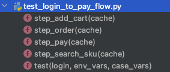

<!DOCTYPE html>
<html lang="zh" dir="auto" data-theme="auto">

<head><meta charset="utf-8">
<meta http-equiv="X-UA-Compatible" content="IE=edge">
<meta name="viewport" content="width=device-width, initial-scale=1, shrink-to-fit=no">
<meta name="robots" content="index, follow">
<title>tep1.0.0 教程 | 测试开发刚哥</title>
<meta name="keywords" content="tep">
<meta name="description" content="正式版教程： https://dongfanger.gitee.io/blog/tep.html">
<meta name="author" content="测试开发刚哥">
<link rel="canonical" href="https://dongfanger.github.io/posts/%E9%A1%B9%E7%9B%AE/tep1.0.0%E6%95%99%E7%A8%8B/">
<link crossorigin="anonymous" href="/assets/css/stylesheet.ed6a9383eae89d64fea95a99049fd89c6675358af3f16330f8e45b64c3339da2.css" integrity="sha256-7WqTg&#43;ronWT&#43;qVqZBJ/YnGZ1NYrz8WMw&#43;ORbZMMznaI=" rel="preload stylesheet" as="style">
<link rel="icon" href="https://dongfanger.github.io/favicon.ico">
<link rel="icon" type="image/png" sizes="16x16" href="https://dongfanger.github.io/favicon-16x16.png">
<link rel="icon" type="image/png" sizes="32x32" href="https://dongfanger.github.io/favicon-32x32.png">
<link rel="apple-touch-icon" href="https://dongfanger.github.io/apple-touch-icon.png">
<link rel="mask-icon" href="https://dongfanger.github.io/safari-pinned-tab.svg">
<meta name="theme-color" content="#2e2e33">
<meta name="msapplication-TileColor" content="#2e2e33">
<link rel="alternate" hreflang="zh" href="https://dongfanger.github.io/posts/%E9%A1%B9%E7%9B%AE/tep1.0.0%E6%95%99%E7%A8%8B/">
<noscript>
    <style>
        #theme-toggle,
        .top-link {
            display: none;
        }

    </style>
    <style>
        @media (prefers-color-scheme: dark) {
            :root {
                --theme: rgb(29, 30, 32);
                --entry: rgb(46, 46, 51);
                --primary: rgb(218, 218, 219);
                --secondary: rgb(155, 156, 157);
                --tertiary: rgb(65, 66, 68);
                --content: rgb(196, 196, 197);
                --code-block-bg: rgb(46, 46, 51);
                --code-bg: rgb(55, 56, 62);
                --border: rgb(51, 51, 51);
                color-scheme: dark;
            }

            .list {
                background: var(--theme);
            }

            .toc {
                background: var(--entry);
            }
        }

    </style>
</noscript>
<script>
    if (localStorage.getItem("pref-theme") === "dark") {
        document.querySelector("html").dataset.theme = 'dark';
    } else if (localStorage.getItem("pref-theme") === "light") {
       document.querySelector("html").dataset.theme = 'light';
    } else if (window.matchMedia('(prefers-color-scheme: dark)').matches) {
        document.querySelector("html").dataset.theme = 'dark';
    } else {
        document.querySelector("html").dataset.theme = 'light';
    }

</script><link rel="preconnect" href="https://cdn.jsdelivr.net" crossorigin>
<link rel="stylesheet" href="https://cdn.jsdelivr.net/npm/@fontsource/jetbrains-mono@5/400.css">
<link rel="stylesheet" href="https://cdn.jsdelivr.net/npm/@fontsource/jetbrains-mono@5/500.css">
<link rel="stylesheet" href="https://cdn.jsdelivr.net/npm/@fontsource/jetbrains-mono@5/700.css">
<meta property="og:url" content="https://dongfanger.github.io/posts/%E9%A1%B9%E7%9B%AE/tep1.0.0%E6%95%99%E7%A8%8B/">
  <meta property="og:site_name" content="测试开发刚哥">
  <meta property="og:title" content="tep1.0.0 教程">
  <meta property="og:description" content="正式版教程： https://dongfanger.gitee.io/blog/tep.html">
  <meta property="og:locale" content="zh_cn">
  <meta property="og:type" content="article">
    <meta property="article:section" content="posts">
    <meta property="article:published_time" content="2026-01-17T00:00:00+00:00">
    <meta property="article:modified_time" content="2026-01-17T00:00:00+00:00">
    <meta property="article:tag" content="Tep">

  <meta name="twitter:card" content="summary">
  <meta name="twitter:title" content="tep1.0.0 教程">
  <meta name="twitter:description" content="正式版教程： https://dongfanger.gitee.io/blog/tep.html">


<script type="application/ld+json">
{
  "@context": "https://schema.org",
  "@type": "BreadcrumbList",
  "itemListElement": [
    {
      "@type": "ListItem",
      "position":  1 ,
      "name": "Posts",
      "item": "https://dongfanger.github.io/posts/"
    }, 
    {
      "@type": "ListItem",
      "position":  2 ,
      "name": "tep1.0.0 教程",
      "item": "https://dongfanger.github.io/posts/%E9%A1%B9%E7%9B%AE/tep1.0.0%E6%95%99%E7%A8%8B/"
    }
  ]
}
</script>
<script type="application/ld+json">
{
  "@context": "https://schema.org",
  "@type": "BlogPosting",
  "headline": "tep1.0.0 教程",
  "name": "tep1.0.0 教程",
  "description": "正式版教程： https://dongfanger.gitee.io/blog/tep.html",
  "keywords": [
    "tep"
  ],
  "articleBody": " 本书作者：测试开发刚哥，文章版权归个人所有，未经授权请勿转载。\n正式版教程： https://dongfanger.gitee.io/blog/tep.html\n正式版源码： https://github.com/dongfanger/tep\ntep 简介 tep是Try Easy Pytest 的首字母缩写，是一款基于 pytest 测试框架的测试工具，集成了各种实用的第三方包和优秀的自动化测试设计思想，帮你快速实现自动化项目落地。\n快速入门 安装 pip install tep Mac 用户建议创建虚拟环境并激活：\npython3 -m venv venv source venv/bin/activate 验证安装成功：\ntep -V 新建项目 tep startproject demo 带上-venv参数，可创建单个项目的 Python 虚拟环境，并在该项目的虚拟环境中安装 tep：\ntep startproject demo -venv 启动 FastAPI 示例应用 运行utils/fastapi_mock.py脚本。\n执行示例用例 执行examples/tests/test_login_to_pay_flow.py用例。\n查看日志 ============================= test session starts ============================== collecting ... collected 1 item test_login_to_pay_flow.py::test ============================== 1 passed in 0.14s =============================== Process finished with exit code 0 2022-12-27 15:19:37.223 | INFO | fixtures.fixture_login:produce_expensive_data:15 - ----------------开始登录---------------- 2022-12-27 15:19:37.234 | INFO | utils.http_client:request:37 - Request URL: http://127.0.0.1:5000/login Request Method: post Request Headers: {\"Content-Type\": \"application/json\"} Request Payload: {\"json\": {\"username\": \"dongfanger\", \"password\": \"123456\"}} Status Code: 200 Response: {\"token\":\"de2e3ffu29\"} Elapsed: 0.003s 2022-12-27 15:19:37.234 | INFO | fixtures.fixture_login:produce_expensive_data:23 - ----------------登录成功---------------- PASSED [100%]2022-12-27 15:19:37.235 | INFO | utils.step:__init__:12 - ----------------搜索商品---------------- 2022-12-27 15:19:37.250 | INFO | utils.http_client:request:37 - Request URL: http://127.0.0.1:5000/searchSku Request Method: get Request Headers: {\"token\": \"de2e3ffu29\"} Request Payload: {\"params\": {\"skuName\": \"\\u7535\\u5b50\\u4e66\"}} Status Code: 200 Response: {\"skuId\":\"222\",\"price\":\"2.3\"} Elapsed: 0.001s 2022-12-27 15:19:37.250 | INFO | utils.step:__init__:12 - ----------------添加购物车---------------- 2022-12-27 15:19:37.254 | INFO | utils.http_client:request:37 - Request URL: http://127.0.0.1:5000/addCart Request Method: post Request Headers: {\"token\": \"de2e3ffu29\"} Request Payload: {\"json\": {\"skuId\": \"222\", \"skuNum\": 2}} Status Code: 200 Response: {\"skuId\":\"222\",\"price\":\"2.3\",\"skuNum\":\"3\",\"totalPrice\":\"6.9\"} Elapsed: 0.001s 2022-12-27 15:19:37.254 | INFO | utils.step:__init__:12 - ----------------下单---------------- 2022-12-27 15:19:37.257 | INFO | utils.http_client:request:37 - Request URL: http://127.0.0.1:5000/order Request Method: post Request Headers: {\"token\": \"de2e3ffu29\"} Request Payload: {\"json\": {\"orderId\": 222, \"payAmount\": \"0.2\", \"skuId\": \"222\", \"price\": \"2.3\", \"skuNum\": \"3\", \"totalPrice\": \"6.9\"}} Status Code: 200 Response: {\"orderId\":\"333\"} Elapsed: 0.001s 2022-12-27 15:19:37.257 | INFO | utils.step:__init__:12 - ----------------支付---------------- 2022-12-27 15:19:37.259 | INFO | utils.http_client:request:37 - Request URL: http://127.0.0.1:5000/pay Request Method: post Request Headers: {\"token\": \"de2e3ffu29\"} Request Payload: {\"json\": {\"skuId\": 123, \"price\": 0.1, \"skuNum\": 2, \"totalPrice\": 0.2, \"orderId\": \"333\"}} Status Code: 200 Response: {\"success\":\"true\"} Elapsed: 0.001s 能在本地跑起来看到日志且没有报错，恭喜您，上手成功！\n目录结构说明 examples：示例代码，可无顾虑全删；\nfixtures：Pytest fixture，自动导入；\nresources：环境变量、全局变量；\ntests：测试用例；\nutils：工具包；\nconftest.py：Pytest 挂载；\npytest.ini：Pytest 配置；\nreports：测试报告，默认不显示，生成报告后会出现；\n用例组织形式 推荐 MVC 分层设计和数据代码分离。\n小提示：tep 老版本的极速写法，即接口、数据、代码都放在一个文件的一个函数的写法，仍然适合于新手或追求效率时使用。\n用例集 在 tests 目录下将测试用例按功能模块分成多个用例集：\ntests user teacher student 测试用例 必须遵循用例解耦原则，每条用例都是单独可运行的。用例由 2 个文件组成，一个文件存放纯粹的 yaml 数据，一个文件存放逻辑代码：\ntest_login_to_pay_flow.yaml test_login_to_pay_flow.py 测试数据 存放在 yaml 文件中，第一层为说明文字，第二层为请求 json：\n\"查询SKU\": { \"skuName\": \"电子书\" } \"添加购物车\": { \"skuId\": 123, \"skuNum\": 2 } \"下单\": { \"orderId\": 222, \"payAmount\": \"0.2\" } \"支付\": { \"skuId\": 123, \"price\": 0.1, \"skuNum\": 2, \"totalPrice\": 0.2 } 测试标题 测试标题采用了@allure.title(\"\")：\n@allure.title(\"从登录到下单支付\") def test(login, env_vars, case_vars): 测试步骤 一条测试用例由多个测试步骤组成：\n@allure.title(\"从登录到下单支付\") def test(login, env_vars, case_vars): case_vars.put(\"token\", login[\"token\"]) cache = TepCache(env_vars=env_vars, case_vars=case_vars) Step(\"搜索商品\", step_search_sku, cache) Step(\"添加购物车\", step_add_cart, cache) Step(\"下单\", step_order, cache) Step(\"支付\", step_pay, cache) Step 第一个参数为步骤描述，第二个参数为步骤实现函数，第三个参数为 cache 缓存。\n步骤实现函数定义在用例文件中：\ndef step_add_cart(cache: TepCache): url = cache.env_vars[\"domain\"] + \"/addCart\" headers = {\"token\": cache.case_vars.get(\"token\")} body = data(\"添加购物车\") body[\"skuId\"] = cache.case_vars.get(\"skuId\") response = request(\"post\", url=url, headers=headers, json=body) assert response.status_code \u003c 400 cache.case_vars.put(\"skuNum\", response.jsonpath(\"$.skuNum\")) cache.case_vars.put(\"totalPrice\", response.jsonpath(\"$.totalPrice\")) 从上往下依次为 url、headers、body、参数化、请求调用、断言、数据提取。\n小技巧：打开 PyCharm 的 Show Members，就能快速定位到某个 step 函数，编辑测试步骤。\n变量 环境变量：在resources/env_vars下预填变量，在resources/tep.yaml中激活某个环境，在代码中引入 env_vars fixture 读取变量值：\ndef test(env_vars): logger.info(env_vars[\"domain\"]) 全局变量：在resources/global_vars.yaml预填变量，在代码中引入 global_vars fixture 读取变量值：\ndef test(global_vars): print(global_vars[\"desc\"]) 用例变量：在用例中引入 case_vars fixture，在步骤函数间通过 cache 传递：\n@allure.title(\"从登录到下单支付\") def test(login, env_vars, case_vars): case_vars.put(\"token\", login[\"token\"]) cache = TepCache(env_vars=env_vars, case_vars=case_vars) Step(\"搜索商品\", step_search_sku, cache) Step(\"添加购物车\", step_add_cart, cache) Step(\"下单\", step_order, cache) Step(\"支付\", step_pay, cache) def step_search_sku(cache: TepCache): url = cache.env_vars[\"domain\"] + \"/searchSku\" headers = {\"token\": cache.case_vars.get(\"token\")} body = data(\"查询SKU\") response = request(\"get\", url=url, headers=headers, params=body) assert response.status_code \u003c 400 cache.case_vars.put(\"skuId\", response.jsonpath(\"$.skuId\")) cache.case_vars.put(\"skuPrice\", response.jsonpath(\"$.price\")) def step_add_cart(cache: TepCache): url = cache.env_vars[\"domain\"] + \"/addCart\" headers = {\"token\": cache.case_vars.get(\"token\")} body = data(\"添加购物车\") body[\"skuId\"] = cache.case_vars.get(\"skuId\") response = request(\"post\", url=url, headers=headers, json=body) assert response.status_code \u003c 400 cache.case_vars.put(\"skuNum\", response.jsonpath(\"$.skuNum\")) cache.case_vars.put(\"totalPrice\", response.jsonpath(\"$.totalPrice\")) 接口关联 如上所述，通过 case_vars 和 cache 实现了步骤函数里面的接口关联，上一个接口的响应，提取后存入 cache，下一个接口的入参，从 cache 取值。\n数据提取 utils/http_client.py封装了 requests.Response，添加了 jsonpath 方法，支持简单取值：\nresponse.jsonpath(\"$.skuNum\") 断言 采用 Python 原生的 assert 断言。16 种常用断言如下：\nimport allure @allure.title(\"等于\") def test_assert_equal(): assert 1 == 1 @allure.title(\"不等于\") def test_assert_not_equal(): assert 1 != 2 @allure.title(\"大于\") def test_assert_greater_than(): assert 2 \u003e 1 @allure.title(\"小于\") def test_assert_less_than(): assert 1 \u003c 2 @allure.title(\"大于等于\") def test_assert_less_or_equals(): assert 2 \u003e= 1 assert 2 \u003e= 2 @allure.title(\"小于等于\") def test_assert_greater_or_equals(): assert 1 \u003c= 2 assert 1 \u003c= 1 @allure.title(\"长度相等\") def test_assert_length_equal(): assert len(\"abc\") == len(\"123\") @allure.title(\"长度大于\") def test_assert_length_greater_than(): assert len(\"hello\") \u003e len(\"123\") @allure.title(\"长度小于\") def test_assert_length_less_than(): assert len(\"hi\") \u003c len(\"123\") @allure.title(\"长度大于等于\") def test_assert_length_greater_or_equals(): assert len(\"hello\") \u003e= len(\"123\") assert len(\"123\") \u003e= len(\"123\") @allure.title(\"长度小于等于\") def test_assert_length_less_or_equals(): assert len(\"123\") \u003c= len(\"hello\") assert len(\"123\") \u003c= len(\"123\") @allure.title(\"字符串相等\") def test_assert_string_equals(): assert \"dongfanger\" == \"dongfanger\" @allure.title(\"以...开头\") def test_assert_startswith(): assert \"dongfanger\".startswith(\"don\") @allure.title(\"以...结尾\") def test_assert_startswith(): assert \"dongfanger\".endswith(\"er\") @allure.title(\"正则匹配\") def test_assert_regex_match(): import re assert re.findall(r\"don.*er\", \"dongfanger\") @allure.title(\"包含\") def test_assert_contains(): assert \"fang\" in \"dongfanger\" assert 2 in [2, 3] assert \"x\" in {\"x\": \"y\"}.keys() @allure.title(\"类型匹配\") def test_assert_type_match(): assert isinstance(1, int) assert isinstance(0.2, float) assert isinstance(True, bool) assert isinstance(3e+26j, complex) assert isinstance(\"hi\", str) assert isinstance([1, 2], list) assert isinstance((1, 2), tuple) assert isinstance({\"a\", \"b\", \"c\"}, set) assert isinstance({\"x\": 1}, dict) 测试报告 allure 下载地址： https://github.com/allure-framework/allure2/releases\n解压后将 bin 目录添加到系统环境变量 Path。\n在 pytest 命令行添加参数--tep-reports就能一键生成 Allure 测试报告，并且会把请求入参和响应出参，记录在测试报告中。\npytest --tep-reports 若想在资源管理器中打开，需要执行命令allure open 报告所在文件夹名才能正常打开。\n用例执行 串行 使用pytest命令即可。\n并行 使用pytest -n auto，由 pytest-xdist 提供支持。\n特色功能 fixtures 自动导入 不是必须在 conftest.py 里面定义 fixture。只要在 fixtures 目录下，创建以fixture_开头的文件，fixture 都会自动加载到 pytest 中，方便管理维护。\n全局执行一次登录 预置了fixtures/fixture_login.py登录接口，且全局仅执行一次，解决 token 复用问题：\nimport pytest from loguru import logger from utils.http_client import request @pytest.fixture(scope=\"session\") def login(tep_context_manager, env_vars): \"\"\" tep_context_manager是为了兼容pytest-xdist分布式执行的上下文管理器 该login只会在整个运行期间执行一次 \"\"\" def produce_expensive_data(variable): logger.info(\"----------------开始登录----------------\") response = request( \"post\", url=variable[\"domain\"] + \"/login\", headers={\"Content-Type\": \"application/json\"}, json={\"username\": \"dongfanger\", \"password\": \"123456\"} ) assert response.status_code \u003c 400 logger.info(\"----------------登录成功----------------\") return response.json() return tep_context_manager(produce_expensive_data, env_vars) 即便在 xdist 分布式场景下，也只会执行一次登录。\n工具包 cache.py，提供缓存。\nclass TepCache: \"\"\" 提供缓存服务，包括全局变量、环境变量、用例变量 \"\"\" def __init__(self, global_vars=None, env_vars=None, case_vars=None): self.global_vars = global_vars self.env_vars = env_vars self.case_vars = case_vars dao.py，目前支持访问 MySQL，需要安装 pymysql、sqlalchemy\b和 pandas。\n#!/usr/bin/python ## encoding=utf-8 \"\"\" @Author : dongfanger @Date : 9/2/2020 11:32 AM @Desc : 访问数据库 \"\"\" from loguru import logger try: from sqlalchemy import create_engine from texttable import Texttable except ModuleNotFoundError: pass def mysql_engine(host, port, user, password, db): try: engine = create_engine(f\"mysql+pymysql://{user}:{password}@{host}:{port}/{db}\") except NameError: return \"\" return engine def print_db_table(data_frame): \"\"\"以表格形式打印数据表\"\"\" tb = Texttable() tb.header(data_frame.columns.array) tb.set_max_width(0) # text * cols tb.set_cols_dtype(['t'] * data_frame.shape[1]) tb.add_rows(data_frame.to_numpy(), header=False) logger.info(tb.draw()) fastapi_mock.py，示例应用。\n#!/usr/bin/python ## encoding=utf-8 import uvicorn from fastapi import FastAPI, Request app = FastAPI() @app.post(\"/login\") async def login(req: Request): body = await req.json() if body[\"username\"] == \"dongfanger\" and body[\"password\"] == \"123456\": return {\"token\": \"de2e3ffu29\"} return \"\" @app.get(\"/searchSku\") def search_sku(req: Request): if req.headers.get(\"token\") == \"de2e3ffu29\" and req.query_params.get(\"skuName\") == \"电子书\": return {\"skuId\": \"222\", \"price\": \"2.3\"} return \"\" @app.post(\"/addCart\") async def add_cart(req: Request): body = await req.json() if req.headers.get(\"token\") == \"de2e3ffu29\" and body[\"skuId\"] == \"222\": return {\"skuId\": \"222\", \"price\": \"2.3\", \"skuNum\": \"3\", \"totalPrice\": \"6.9\"} return \"\" @app.post(\"/order\") async def order(req: Request): body = await req.json() if req.headers.get(\"token\") == \"de2e3ffu29\" and body[\"skuId\"] == \"222\": return {\"orderId\": \"333\"} return \"\" @app.post(\"/pay\") async def pay(req: Request): body = await req.json() if req.headers.get(\"token\") == \"de2e3ffu29\" and body[\"orderId\"] == \"333\": return {\"success\": \"true\"} return \"\" if __name__ == '__main__': uvicorn.run(\"fastapi_mock:app\", host=\"127.0.0.1\", port=5000) func.py，常用函数，比如 pairwise 自动生成用例等。\n#!/usr/bin/python ## encoding=utf-8 \"\"\" @Author : dongfanger @Date : 7/24/2020 5:41 PM @Desc : tep函数库 \"\"\" import copy import inspect import itertools import json import os import time from sys import stdout import yaml from loguru import logger from utils.project import Project def current_time(): \"\"\" 当前时间，年-月-日 时-分-秒 :return: \"\"\" return time.strftime(\"%Y-%m-%d %H:%M:%S\", time.localtime(time.time())) def current_date(): \"\"\" 当前日期 年-月-日 :return: \"\"\" return time.strftime(\"%Y-%m-%d\", time.localtime(time.time())) def print_progress_bar(i): \"\"\" 进度条 \"\"\" c = int(i / 10) progress = '\\r %2d%% [%s%s]' a = '■' * c b = '□' * (10 - c) msg = progress % (i, a, b) stdout.write(msg) stdout.flush() def case_pairwise(option): \"\"\" pairwise算法 \"\"\" cp = [] # 笛卡尔积 s = [] # 两两拆分 for x in eval('itertools.product' + str(tuple(option))): cp.append(x) s.append([i for i in itertools.combinations(x, 2)]) logger.info('笛卡尔积:%s' % len(cp)) del_row = [] print_progress_bar(0) s2 = copy.deepcopy(s) for i in range(len(s)): # 对每行用例进行匹配 if (i % 100) == 0 or i == len(s) - 1: print_progress_bar(int(100 * i / (len(s) - 1))) t = 0 for j in range(len(s[i])): # 对每行用例的两两拆分进行判断，是否出现在其他行 flag = False for i2 in [x for x in range(len(s2)) if s2[x] != s[i]]: # 找同一列 if s[i][j] == s2[i2][j]: t = t + 1 flag = True break if not flag: # 同一列没找到，不用找剩余列了 break if t == len(s[i]): del_row.append(i) s2.remove(s[i]) res = [cp[i] for i in range(len(cp)) if i not in del_row] logger.info('过滤后:%s' % len(res)) return res def load_yaml(path: str) -\u003e dict: with open(path, encoding=\"utf8\") as f: return yaml.load(f.read(), Loader=yaml.FullLoader) def jwt_headers(token): \"\"\" jwt请求头 \"\"\" return {\"Content-Type\": \"application/json\", \"authorization\": f\"Bearer {token}\"} def data(first_node: str) -\u003e dict: \"\"\" 读用例同名的yaml文件 取首节点的值 \"\"\" caller = inspect.stack()[1] case_path = os.path.dirname(caller.filename) basename = os.path.basename(caller.filename) data_path_yml = os.path.join(case_path, basename.rstrip(\".py\") + \".yml\") data_path_yaml = os.path.join(case_path, basename.rstrip(\".py\") + \".yaml\") node_value = {} if not os.path.exists(data_path_yml) and not os.path.exists(data_path_yaml): logger.error(\"数据文件不存在\") return node_value data_path = data_path_yml if os.path.exists(data_path_yml) else data_path_yaml try: return load_yaml(data_path)[first_node] except KeyError: logger.error(f\"数据文件{data_path}不存在首节点{first_node}\") http_client.py，requests 库的猴子补丁，可自定义。\n#!/usr/bin/python ## encoding=utf-8 import decimal import json import time import allure import jsonpath import requests import urllib3 from loguru import logger from requests import Response urllib3.disable_warnings(urllib3.exceptions.InsecureRequestWarning) def request(method, url, **kwargs): template = \"\"\"\\n Request URL: {} Request Method: {} Request Headers: {} Request Payload: {} Status Code: {} Response: {} Elapsed: {} \"\"\" start = time.process_time() response = requests.request(method, url, **kwargs) # requests.request原生用法 end = time.process_time() elapsed = str(decimal.Decimal(\"%.3f\" % float(end - start))) + \"s\" headers = kwargs.get(\"headers\", {}) kwargs.pop(\"headers\") payload = kwargs log = template.format(url, method, json.dumps(headers), json.dumps(payload), response.status_code, response.text, elapsed) logger.info(log) allure.attach(log, f'request \u0026 response', allure.attachment_type.TEXT) return TepResponse(response) class TepResponse(Response): \"\"\" 二次封装requests.Response，添加额外方法 \"\"\" def __init__(self, response): super().__init__() for k, v in response.__dict__.items(): self.__dict__[k] = v def jsonpath(self, expr): \"\"\" 此处强制取第一个值，便于简单取值 如果复杂取值，建议直接jsonpath原生用法 \"\"\" return jsonpath.jsonpath(self.json(), expr)[0] mitm.py，流量录制，做的不是很好，将就看看。\n#!/usr/bin/python ## encoding=utf-8 ## mitmproxy录制流量自动生成用例 import os import time from mitmproxy import ctx project_dir = os.path.dirname(os.path.dirname(os.path.abspath(__file__))) tests_dir = os.path.join(project_dir, \"tests\") ## tests/mitm mitm_dir = os.path.join(tests_dir, \"mitm\") if not os.path.exists(mitm_dir): os.mkdir(mitm_dir) ## 当前时间作为文件名 filename = f'test_{time.strftime(\"%Y%m%d_%H%M%S\", time.localtime())}.py' case_file = os.path.join(mitm_dir, filename) ## 生成用例文件 template = \"\"\"import allure from utils.http_client import request @allure.title(\"\") def test(env_vars): \"\"\" if not os.path.exists(case_file): with open(case_file, \"w\", encoding=\"utf8\") as fw: fw.write(template) class Record: def __init__(self, domains): self.domains = domains def response(self, flow): if self.match(flow.request.url): # method method = flow.request.method.lower() ctx.log.error(method) # url url = flow.request.url ctx.log.error(url) # headers headers = dict(flow.request.headers) ctx.log.error(headers) # body body = flow.request.text or {} ctx.log.error(body) with open(case_file, \"a\", encoding=\"utf8\") as fa: fa.write(self.step(method, url, headers, body)) def match(self, url): if not self.domains: ctx.log.error(\"必须配置过滤域名\") exit(-1) for domain in self.domains: if domain in url: return True return False def step(self, method, url, headers, body): if method == \"get\": body_grammar = f\"params={body}\" else: body_grammar = f\"json={body}\" return f\"\"\" # 描述 # 数据 # 请求 response = request( \"{method}\", url=\"{url}\", headers={headers}, {body_grammar} ) # 提取 # 断言 assert response.status_code \u003c 400 \"\"\" ## ==================================配置开始================================== addons = [ Record( # 过滤域名 [ \"http://www.httpbin.org\", \"http://127.0.0.1:5000\" ], ) ] ## ==================================配置结束================================== \"\"\" ==================================命令说明开始================================== ## 正向代理（需要手动打开代理） mitmdump -s mitm.py ## 反向代理 mitmdump -s mitm.py --mode reverse:http://127.0.0.1:5000 --listen-host 127.0.0.1 --listen-port 8000 ==================================命令说明结束================================== \"\"\" project.py，项目基本信息，比如根目录路径。\nimport os class Project: root_dir = os.path.dirname(os.path.dirname(os.path.abspath(__file__))) data_dir = os.path.join(root_dir, \"data\") step.py，测试步骤的泛化调用。\nfrom loguru import logger from utils.cache import TepCache class Step: \"\"\" 测试步骤，泛化调用 \"\"\" def __init__(self, name: str, action, cache: TepCache): logger.info(\"----------------\" + name + \"----------------\") action(cache) 关于 tep 的更多技术细节，请在源码中一探究竟吧。也可以添加微信cekaigang，随时与我联系。\n结束与开始 tep 小工具发布了 1.0.0 正式版，我也将不再对其进行维护。对 Pytest 做接口测试自动化的探索远没有结束，我将从teprunner2.0 测试平台开始，继续研究 Pytest 框架的自动化落地实践，那些对测试技术的热情，终将使我们再次相遇。\n源码 Gitee：\nhttps://gitee.com/dongfanger/teprunner-backend\nhttps://gitee.com/dongfanger/teprunner-frontend\n源码 GitHub：\nhttps://github.com/dongfanger/teprunner-backend\nhttps://github.com/dongfanger/teprunner-frontend\n",
  "wordCount" : "1762",
  "inLanguage": "zh",
  "datePublished": "2026-01-17T00:00:00Z",
  "dateModified": "2026-01-17T00:00:00Z",
  "author":{
    "@type": "Person",
    "name": "测试开发刚哥"
  },
  "mainEntityOfPage": {
    "@type": "WebPage",
    "@id": "https://dongfanger.github.io/posts/%E9%A1%B9%E7%9B%AE/tep1.0.0%E6%95%99%E7%A8%8B/"
  },
  "publisher": {
    "@type": "Organization",
    "name": "测试开发刚哥",
    "logo": {
      "@type": "ImageObject",
      "url": "https://dongfanger.github.io/favicon.ico"
    }
  }
}
</script>
</head>
<body id="top">
    <div id="page-loader" aria-hidden="true">
        <span class="loader-text"><span class="prompt">$</span> loading<span class="cursor">_</span></span>
    </div>
    <div id="reading-progress"></div>
    <header class="header">
    <nav class="header-nav">
        <div class="logo">
            <a href="https://dongfanger.github.io/" accesskey="h" title="测试开发刚哥 (Alt + H)">测试开发刚哥</a>
            <div class="logo-switches">
                <button id="theme-toggle" class="theme-toggle" accesskey="t" title="(Alt + T)" aria-label="Toggle theme">
                    <svg class="moon" xmlns="http://www.w3.org/2000/svg" width="17" height="17" viewBox="0 0 24 24"
                        fill="none" stroke="currentColor" stroke-width="2" stroke-linecap="round"
                        stroke-linejoin="round">
                        <path d="M21 12.79A9 9 0 1 1 11.21 3 7 7 0 0 0 21 12.79z"></path>
                    </svg>
                    <svg class="sun" xmlns="http://www.w3.org/2000/svg" width="17" height="17" viewBox="0 0 24 24"
                        fill="none" stroke="currentColor" stroke-width="2" stroke-linecap="round"
                        stroke-linejoin="round">
                        <circle cx="12" cy="12" r="5"></circle>
                        <line x1="12" y1="1" x2="12" y2="3"></line>
                        <line x1="12" y1="21" x2="12" y2="23"></line>
                        <line x1="4.22" y1="4.22" x2="5.64" y2="5.64"></line>
                        <line x1="18.36" y1="18.36" x2="19.78" y2="19.78"></line>
                        <line x1="1" y1="12" x2="3" y2="12"></line>
                        <line x1="21" y1="12" x2="23" y2="12"></line>
                        <line x1="4.22" y1="19.78" x2="5.64" y2="18.36"></line>
                        <line x1="18.36" y1="5.64" x2="19.78" y2="4.22"></line>
                    </svg>
                </button>
            </div>
        </div>
        <ul id="menu" class="menu">
            <li>
                <a href="https://dongfanger.github.io/archives/" title="归档">
                    <span>归档</span>
                </a>
            </li>
            <li>
                <a href="https://dongfanger.github.io/categories/" title="分类">
                    <span>分类</span>
                </a>
            </li>
            <li>
                <a href="https://dongfanger.github.io/tags/" title="标签">
                    <span>标签</span>
                </a>
            </li>
            <li>
                <a href="https://dongfanger.github.io/about/" title="关于">
                    <span>关于</span>
                </a>
            </li>
            <li>
                <a href="https://dongfanger.github.io/search/" title="搜索 (Alt &#43; /)" accesskey=/>
                    <span>搜索</span>
                </a>
            </li>
        </ul>
    </nav>
</header>
<main class="main">

<div class="post-single-wrapper">
<article class="post-single">
  <header class="post-header">
    
    <h1 class="post-title entry-hint-parent">
      tep1.0.0 教程
    </h1>
    <div class="post-meta">

<span title='2026-01-17T00:00:00+00:00'>2026-01-17</span>&nbsp;·&nbsp;<a class='meta-term meta-category' href='https://dongfanger.github.io/categories/%E9%A1%B9%E7%9B%AE/'>项目</a>&nbsp;·&nbsp;<a class='meta-term meta-tag' href='https://dongfanger.github.io/tags/tep/'>#Tep</a>

</div>
  </header> 
  <div class="post-content md-content"><blockquote>
<p>本书作者：测试开发刚哥，文章版权归个人所有，未经授权请勿转载。</p>
</blockquote>
<p>正式版教程： <a href="https://dongfanger.gitee.io/blog/tep.html">https://dongfanger.gitee.io/blog/tep.html</a></p>
<p>正式版源码： <a href="https://github.com/dongfanger/tep">https://github.com/dongfanger/tep</a></p>
<h2 id="tep-简介">tep 简介<a hidden class="anchor" aria-hidden="true" href="#tep-简介">#</a></h2>
<p><code>tep</code>是<strong>T</strong>ry <strong>E</strong>asy <strong>P</strong>ytest 的首字母缩写，是一款基于 pytest 测试框架的测试工具，集成了各种实用的第三方包和优秀的自动化测试设计思想，帮你快速实现自动化项目落地。</p>
<h2 id="快速入门">快速入门<a hidden class="anchor" aria-hidden="true" href="#快速入门">#</a></h2>
<h3 id="安装">安装<a hidden class="anchor" aria-hidden="true" href="#安装">#</a></h3>
<div class="highlight"><pre tabindex="0" style="background-color:#f7f7f7;-moz-tab-size:4;-o-tab-size:4;tab-size:4;-webkit-text-size-adjust:none;"><code class="language-shell" data-lang="shell"><span style="display:flex;"><span>pip install tep
</span></span></code></pre></div><p>Mac 用户建议创建虚拟环境并激活：</p>
<div class="highlight"><pre tabindex="0" style="background-color:#f7f7f7;-moz-tab-size:4;-o-tab-size:4;tab-size:4;-webkit-text-size-adjust:none;"><code class="language-shell" data-lang="shell"><span style="display:flex;"><span>python3 -m venv venv
</span></span><span style="display:flex;"><span><span style="color:#6639ba">source</span> venv/bin/activate
</span></span></code></pre></div><p>验证安装成功：</p>
<div class="highlight"><pre tabindex="0" style="background-color:#f7f7f7;-moz-tab-size:4;-o-tab-size:4;tab-size:4;-webkit-text-size-adjust:none;"><code class="language-shell" data-lang="shell"><span style="display:flex;"><span>tep -V
</span></span></code></pre></div><h3 id="新建项目">新建项目<a hidden class="anchor" aria-hidden="true" href="#新建项目">#</a></h3>
<div class="highlight"><pre tabindex="0" style="background-color:#f7f7f7;-moz-tab-size:4;-o-tab-size:4;tab-size:4;-webkit-text-size-adjust:none;"><code class="language-shell" data-lang="shell"><span style="display:flex;"><span>tep startproject demo
</span></span></code></pre></div><p>带上<code>-venv</code>参数，可创建单个项目的 Python 虚拟环境，并在该项目的虚拟环境中安装 tep：</p>
<div class="highlight"><pre tabindex="0" style="background-color:#f7f7f7;-moz-tab-size:4;-o-tab-size:4;tab-size:4;-webkit-text-size-adjust:none;"><code class="language-shell" data-lang="shell"><span style="display:flex;"><span>tep startproject demo -venv
</span></span></code></pre></div><h3 id="启动-fastapi-示例应用">启动 FastAPI 示例应用<a hidden class="anchor" aria-hidden="true" href="#启动-fastapi-示例应用">#</a></h3>
<p>运行<code>utils/fastapi_mock.py</code>脚本。</p>
<h3 id="执行示例用例">执行示例用例<a hidden class="anchor" aria-hidden="true" href="#执行示例用例">#</a></h3>
<p>执行<code>examples/tests/test_login_to_pay_flow.py</code>用例。</p>
<h3 id="查看日志">查看日志<a hidden class="anchor" aria-hidden="true" href="#查看日志">#</a></h3>
<pre tabindex="0"><code>============================= test session starts ==============================
collecting ... collected 1 item

test_login_to_pay_flow.py::test 

============================== 1 passed in 0.14s ===============================

Process finished with exit code 0
2022-12-27 15:19:37.223 | INFO     | fixtures.fixture_login:produce_expensive_data:15 - ----------------开始登录----------------
2022-12-27 15:19:37.234 | INFO     | utils.http_client:request:37 - 

Request URL: http://127.0.0.1:5000/login
Request Method: post
Request Headers: {&#34;Content-Type&#34;: &#34;application/json&#34;}
Request Payload: {&#34;json&#34;: {&#34;username&#34;: &#34;dongfanger&#34;, &#34;password&#34;: &#34;123456&#34;}}
Status Code: 200
Response: {&#34;token&#34;:&#34;de2e3ffu29&#34;}
Elapsed: 0.003s

2022-12-27 15:19:37.234 | INFO     | fixtures.fixture_login:produce_expensive_data:23 - ----------------登录成功----------------
PASSED                                   [100%]2022-12-27 15:19:37.235 | INFO     | utils.step:__init__:12 - ----------------搜索商品----------------
2022-12-27 15:19:37.250 | INFO     | utils.http_client:request:37 - 

Request URL: http://127.0.0.1:5000/searchSku
Request Method: get
Request Headers: {&#34;token&#34;: &#34;de2e3ffu29&#34;}
Request Payload: {&#34;params&#34;: {&#34;skuName&#34;: &#34;\u7535\u5b50\u4e66&#34;}}
Status Code: 200
Response: {&#34;skuId&#34;:&#34;222&#34;,&#34;price&#34;:&#34;2.3&#34;}
Elapsed: 0.001s

2022-12-27 15:19:37.250 | INFO     | utils.step:__init__:12 - ----------------添加购物车----------------
2022-12-27 15:19:37.254 | INFO     | utils.http_client:request:37 - 

Request URL: http://127.0.0.1:5000/addCart
Request Method: post
Request Headers: {&#34;token&#34;: &#34;de2e3ffu29&#34;}
Request Payload: {&#34;json&#34;: {&#34;skuId&#34;: &#34;222&#34;, &#34;skuNum&#34;: 2}}
Status Code: 200
Response: {&#34;skuId&#34;:&#34;222&#34;,&#34;price&#34;:&#34;2.3&#34;,&#34;skuNum&#34;:&#34;3&#34;,&#34;totalPrice&#34;:&#34;6.9&#34;}
Elapsed: 0.001s

2022-12-27 15:19:37.254 | INFO     | utils.step:__init__:12 - ----------------下单----------------
2022-12-27 15:19:37.257 | INFO     | utils.http_client:request:37 - 

Request URL: http://127.0.0.1:5000/order
Request Method: post
Request Headers: {&#34;token&#34;: &#34;de2e3ffu29&#34;}
Request Payload: {&#34;json&#34;: {&#34;orderId&#34;: 222, &#34;payAmount&#34;: &#34;0.2&#34;, &#34;skuId&#34;: &#34;222&#34;, &#34;price&#34;: &#34;2.3&#34;, &#34;skuNum&#34;: &#34;3&#34;, &#34;totalPrice&#34;: &#34;6.9&#34;}}
Status Code: 200
Response: {&#34;orderId&#34;:&#34;333&#34;}
Elapsed: 0.001s

2022-12-27 15:19:37.257 | INFO     | utils.step:__init__:12 - ----------------支付----------------
2022-12-27 15:19:37.259 | INFO     | utils.http_client:request:37 - 

Request URL: http://127.0.0.1:5000/pay
Request Method: post
Request Headers: {&#34;token&#34;: &#34;de2e3ffu29&#34;}
Request Payload: {&#34;json&#34;: {&#34;skuId&#34;: 123, &#34;price&#34;: 0.1, &#34;skuNum&#34;: 2, &#34;totalPrice&#34;: 0.2, &#34;orderId&#34;: &#34;333&#34;}}
Status Code: 200
Response: {&#34;success&#34;:&#34;true&#34;}
Elapsed: 0.001s
</code></pre><p>能在本地跑起来看到日志且没有报错，恭喜您，上手成功！</p>
<h2 id="目录结构说明">目录结构说明<a hidden class="anchor" aria-hidden="true" href="#目录结构说明">#</a></h2>
<p>examples：示例代码，可无顾虑全删；</p>
<p>fixtures：Pytest fixture，自动导入；</p>
<p>resources：环境变量、全局变量；</p>
<p>tests：测试用例；</p>
<p>utils：工具包；</p>
<p>conftest.py：Pytest 挂载；</p>
<p>pytest.ini：Pytest 配置；</p>
<p>reports：测试报告，默认不显示，生成报告后会出现；</p>
<h2 id="用例组织形式">用例组织形式<a hidden class="anchor" aria-hidden="true" href="#用例组织形式">#</a></h2>
<p><strong>推荐 MVC 分层设计和数据代码分离。</strong></p>
<p>小提示：tep 老版本的极速写法，即接口、数据、代码都放在一个文件的一个函数的写法，仍然适合于新手或追求效率时使用。</p>
<h3 id="用例集">用例集<a hidden class="anchor" aria-hidden="true" href="#用例集">#</a></h3>
<p>在 tests 目录下将测试用例按功能模块分成多个用例集：</p>
<pre tabindex="0"><code>tests
  user
  teacher
  student
</code></pre><h3 id="测试用例">测试用例<a hidden class="anchor" aria-hidden="true" href="#测试用例">#</a></h3>
<p>必须遵循用例解耦原则，每条用例都是单独可运行的。用例由 2 个文件组成，一个文件存放纯粹的 yaml 数据，一个文件存放逻辑代码：</p>
<pre tabindex="0"><code>test_login_to_pay_flow.yaml
test_login_to_pay_flow.py
</code></pre><h3 id="测试数据">测试数据<a hidden class="anchor" aria-hidden="true" href="#测试数据">#</a></h3>
<p>存放在 yaml 文件中，第一层为说明文字，第二层为请求 json：</p>
<div class="highlight"><pre tabindex="0" style="background-color:#f7f7f7;-moz-tab-size:4;-o-tab-size:4;tab-size:4;-webkit-text-size-adjust:none;"><code class="language-yaml" data-lang="yaml"><span style="display:flex;"><span><span style="color:#0550ae">&#34;查询SKU&#34;: </span>{<span style="color:#fff">
</span></span></span><span style="display:flex;"><span><span style="color:#fff">  </span><span style="color:#0550ae">&#34;skuName&#34;: </span><span style="color:#0a3069">&#34;电子书&#34;</span><span style="color:#fff">
</span></span></span><span style="display:flex;"><span>}<span style="color:#fff">
</span></span></span><span style="display:flex;"><span><span style="color:#fff">
</span></span></span><span style="display:flex;"><span><span style="color:#0550ae">&#34;添加购物车&#34;: </span>{<span style="color:#fff">
</span></span></span><span style="display:flex;"><span><span style="color:#fff">  </span><span style="color:#0550ae">&#34;skuId&#34;: </span><span style="color:#0550ae">123</span><span style="color:#1f2328">,</span><span style="color:#fff">
</span></span></span><span style="display:flex;"><span><span style="color:#fff">  </span><span style="color:#0550ae">&#34;skuNum&#34;: </span><span style="color:#0550ae">2</span><span style="color:#fff">
</span></span></span><span style="display:flex;"><span>}<span style="color:#fff">
</span></span></span><span style="display:flex;"><span><span style="color:#fff">
</span></span></span><span style="display:flex;"><span><span style="color:#0550ae">&#34;下单&#34;: </span>{<span style="color:#fff">
</span></span></span><span style="display:flex;"><span><span style="color:#fff">  </span><span style="color:#0550ae">&#34;orderId&#34;: </span><span style="color:#0550ae">222</span><span style="color:#1f2328">,</span><span style="color:#fff">
</span></span></span><span style="display:flex;"><span><span style="color:#fff">  </span><span style="color:#0550ae">&#34;payAmount&#34;: </span><span style="color:#0a3069">&#34;0.2&#34;</span><span style="color:#fff">
</span></span></span><span style="display:flex;"><span>}<span style="color:#fff">
</span></span></span><span style="display:flex;"><span><span style="color:#fff">
</span></span></span><span style="display:flex;"><span><span style="color:#0550ae">&#34;支付&#34;: </span>{<span style="color:#fff">
</span></span></span><span style="display:flex;"><span><span style="color:#fff">  </span><span style="color:#0550ae">&#34;skuId&#34;: </span><span style="color:#0550ae">123</span><span style="color:#1f2328">,</span><span style="color:#fff">
</span></span></span><span style="display:flex;"><span><span style="color:#fff">  </span><span style="color:#0550ae">&#34;price&#34;: </span><span style="color:#0550ae">0.1</span><span style="color:#1f2328">,</span><span style="color:#fff">
</span></span></span><span style="display:flex;"><span><span style="color:#fff">  </span><span style="color:#0550ae">&#34;skuNum&#34;: </span><span style="color:#0550ae">2</span><span style="color:#1f2328">,</span><span style="color:#fff">
</span></span></span><span style="display:flex;"><span><span style="color:#fff">  </span><span style="color:#0550ae">&#34;totalPrice&#34;: </span><span style="color:#0550ae">0.2</span><span style="color:#fff">
</span></span></span><span style="display:flex;"><span>}<span style="color:#fff">
</span></span></span></code></pre></div><h3 id="测试标题">测试标题<a hidden class="anchor" aria-hidden="true" href="#测试标题">#</a></h3>
<p>测试标题采用了<code>@allure.title(&quot;&quot;)</code>：</p>
<div class="highlight"><pre tabindex="0" style="background-color:#f7f7f7;-moz-tab-size:4;-o-tab-size:4;tab-size:4;-webkit-text-size-adjust:none;"><code class="language-python" data-lang="python"><span style="display:flex;"><span><span style="color:#0550ae">@allure.title</span><span style="color:#1f2328">(</span><span style="color:#0a3069">&#34;从登录到下单支付&#34;</span><span style="color:#1f2328">)</span>
</span></span><span style="display:flex;"><span><span style="color:#cf222e">def</span> <span style="color:#6639ba">test</span><span style="color:#1f2328">(</span>login<span style="color:#1f2328">,</span> env_vars<span style="color:#1f2328">,</span> case_vars<span style="color:#1f2328">):</span>
</span></span></code></pre></div><h3 id="测试步骤">测试步骤<a hidden class="anchor" aria-hidden="true" href="#测试步骤">#</a></h3>
<p>一条测试用例由多个测试步骤组成：</p>
<div class="highlight"><pre tabindex="0" style="background-color:#f7f7f7;-moz-tab-size:4;-o-tab-size:4;tab-size:4;-webkit-text-size-adjust:none;"><code class="language-python" data-lang="python"><span style="display:flex;"><span><span style="color:#0550ae">@allure.title</span><span style="color:#1f2328">(</span><span style="color:#0a3069">&#34;从登录到下单支付&#34;</span><span style="color:#1f2328">)</span>
</span></span><span style="display:flex;"><span><span style="color:#cf222e">def</span> <span style="color:#6639ba">test</span><span style="color:#1f2328">(</span>login<span style="color:#1f2328">,</span> env_vars<span style="color:#1f2328">,</span> case_vars<span style="color:#1f2328">):</span>
</span></span><span style="display:flex;"><span>    case_vars<span style="color:#0550ae">.</span>put<span style="color:#1f2328">(</span><span style="color:#0a3069">&#34;token&#34;</span><span style="color:#1f2328">,</span> login<span style="color:#1f2328">[</span><span style="color:#0a3069">&#34;token&#34;</span><span style="color:#1f2328">])</span>
</span></span><span style="display:flex;"><span>    cache <span style="color:#0550ae">=</span> TepCache<span style="color:#1f2328">(</span>env_vars<span style="color:#0550ae">=</span>env_vars<span style="color:#1f2328">,</span> case_vars<span style="color:#0550ae">=</span>case_vars<span style="color:#1f2328">)</span>
</span></span><span style="display:flex;"><span>
</span></span><span style="display:flex;"><span>    Step<span style="color:#1f2328">(</span><span style="color:#0a3069">&#34;搜索商品&#34;</span><span style="color:#1f2328">,</span> step_search_sku<span style="color:#1f2328">,</span> cache<span style="color:#1f2328">)</span>
</span></span><span style="display:flex;"><span>    Step<span style="color:#1f2328">(</span><span style="color:#0a3069">&#34;添加购物车&#34;</span><span style="color:#1f2328">,</span> step_add_cart<span style="color:#1f2328">,</span> cache<span style="color:#1f2328">)</span>
</span></span><span style="display:flex;"><span>    Step<span style="color:#1f2328">(</span><span style="color:#0a3069">&#34;下单&#34;</span><span style="color:#1f2328">,</span> step_order<span style="color:#1f2328">,</span> cache<span style="color:#1f2328">)</span>
</span></span><span style="display:flex;"><span>    Step<span style="color:#1f2328">(</span><span style="color:#0a3069">&#34;支付&#34;</span><span style="color:#1f2328">,</span> step_pay<span style="color:#1f2328">,</span> cache<span style="color:#1f2328">)</span>
</span></span></code></pre></div><p>Step 第一个参数为步骤描述，第二个参数为步骤实现函数，第三个参数为 cache 缓存。</p>
<p>步骤实现函数定义在用例文件中：</p>
<div class="highlight"><pre tabindex="0" style="background-color:#f7f7f7;-moz-tab-size:4;-o-tab-size:4;tab-size:4;-webkit-text-size-adjust:none;"><code class="language-python" data-lang="python"><span style="display:flex;"><span><span style="color:#cf222e">def</span> <span style="color:#6639ba">step_add_cart</span><span style="color:#1f2328">(</span>cache<span style="color:#1f2328">:</span> TepCache<span style="color:#1f2328">):</span>
</span></span><span style="display:flex;"><span>    url <span style="color:#0550ae">=</span> cache<span style="color:#0550ae">.</span>env_vars<span style="color:#1f2328">[</span><span style="color:#0a3069">&#34;domain&#34;</span><span style="color:#1f2328">]</span> <span style="color:#0550ae">+</span> <span style="color:#0a3069">&#34;/addCart&#34;</span>
</span></span><span style="display:flex;"><span>    headers <span style="color:#0550ae">=</span> <span style="color:#1f2328">{</span><span style="color:#0a3069">&#34;token&#34;</span><span style="color:#1f2328">:</span> cache<span style="color:#0550ae">.</span>case_vars<span style="color:#0550ae">.</span>get<span style="color:#1f2328">(</span><span style="color:#0a3069">&#34;token&#34;</span><span style="color:#1f2328">)}</span>
</span></span><span style="display:flex;"><span>    body <span style="color:#0550ae">=</span> data<span style="color:#1f2328">(</span><span style="color:#0a3069">&#34;添加购物车&#34;</span><span style="color:#1f2328">)</span>
</span></span><span style="display:flex;"><span>    body<span style="color:#1f2328">[</span><span style="color:#0a3069">&#34;skuId&#34;</span><span style="color:#1f2328">]</span> <span style="color:#0550ae">=</span> cache<span style="color:#0550ae">.</span>case_vars<span style="color:#0550ae">.</span>get<span style="color:#1f2328">(</span><span style="color:#0a3069">&#34;skuId&#34;</span><span style="color:#1f2328">)</span>
</span></span><span style="display:flex;"><span>
</span></span><span style="display:flex;"><span>    response <span style="color:#0550ae">=</span> request<span style="color:#1f2328">(</span><span style="color:#0a3069">&#34;post&#34;</span><span style="color:#1f2328">,</span> url<span style="color:#0550ae">=</span>url<span style="color:#1f2328">,</span> headers<span style="color:#0550ae">=</span>headers<span style="color:#1f2328">,</span> json<span style="color:#0550ae">=</span>body<span style="color:#1f2328">)</span>
</span></span><span style="display:flex;"><span>    <span style="color:#cf222e">assert</span> response<span style="color:#0550ae">.</span>status_code <span style="color:#0550ae">&lt;</span> <span style="color:#0550ae">400</span>
</span></span><span style="display:flex;"><span>
</span></span><span style="display:flex;"><span>    cache<span style="color:#0550ae">.</span>case_vars<span style="color:#0550ae">.</span>put<span style="color:#1f2328">(</span><span style="color:#0a3069">&#34;skuNum&#34;</span><span style="color:#1f2328">,</span> response<span style="color:#0550ae">.</span>jsonpath<span style="color:#1f2328">(</span><span style="color:#0a3069">&#34;$.skuNum&#34;</span><span style="color:#1f2328">))</span>
</span></span><span style="display:flex;"><span>    cache<span style="color:#0550ae">.</span>case_vars<span style="color:#0550ae">.</span>put<span style="color:#1f2328">(</span><span style="color:#0a3069">&#34;totalPrice&#34;</span><span style="color:#1f2328">,</span> response<span style="color:#0550ae">.</span>jsonpath<span style="color:#1f2328">(</span><span style="color:#0a3069">&#34;$.totalPrice&#34;</span><span style="color:#1f2328">))</span>
</span></span></code></pre></div><p>从上往下依次为 url、headers、body、参数化、请求调用、断言、数据提取。</p>
<p>小技巧：打开 PyCharm 的 Show Members，就能快速定位到某个 step 函数，编辑测试步骤。</p>
<p></p>
<p></p>
<h2 id="变量">变量<a hidden class="anchor" aria-hidden="true" href="#变量">#</a></h2>
<p><strong>环境变量</strong>：在<code>resources/env_vars</code>下预填变量，在<code>resources/tep.yaml</code>中激活某个环境，在代码中引入 env_vars fixture 读取变量值：</p>
<div class="highlight"><pre tabindex="0" style="background-color:#f7f7f7;-moz-tab-size:4;-o-tab-size:4;tab-size:4;-webkit-text-size-adjust:none;"><code class="language-python" data-lang="python"><span style="display:flex;"><span><span style="color:#cf222e">def</span> <span style="color:#6639ba">test</span><span style="color:#1f2328">(</span>env_vars<span style="color:#1f2328">):</span>
</span></span><span style="display:flex;"><span>    logger<span style="color:#0550ae">.</span>info<span style="color:#1f2328">(</span>env_vars<span style="color:#1f2328">[</span><span style="color:#0a3069">&#34;domain&#34;</span><span style="color:#1f2328">])</span>
</span></span></code></pre></div><p><strong>全局变量</strong>：在<code>resources/global_vars.yaml</code>预填变量，在代码中引入 global_vars fixture 读取变量值：</p>
<div class="highlight"><pre tabindex="0" style="background-color:#f7f7f7;-moz-tab-size:4;-o-tab-size:4;tab-size:4;-webkit-text-size-adjust:none;"><code class="language-python" data-lang="python"><span style="display:flex;"><span><span style="color:#cf222e">def</span> <span style="color:#6639ba">test</span><span style="color:#1f2328">(</span>global_vars<span style="color:#1f2328">):</span>
</span></span><span style="display:flex;"><span>    <span style="color:#6639ba">print</span><span style="color:#1f2328">(</span>global_vars<span style="color:#1f2328">[</span><span style="color:#0a3069">&#34;desc&#34;</span><span style="color:#1f2328">])</span>
</span></span></code></pre></div><p><strong>用例变量</strong>：在用例中引入 case_vars fixture，在步骤函数间通过 cache 传递：</p>
<div class="highlight"><pre tabindex="0" style="background-color:#f7f7f7;-moz-tab-size:4;-o-tab-size:4;tab-size:4;-webkit-text-size-adjust:none;"><code class="language-python" data-lang="python"><span style="display:flex;"><span><span style="color:#0550ae">@allure.title</span><span style="color:#1f2328">(</span><span style="color:#0a3069">&#34;从登录到下单支付&#34;</span><span style="color:#1f2328">)</span>
</span></span><span style="display:flex;"><span><span style="color:#cf222e">def</span> <span style="color:#6639ba">test</span><span style="color:#1f2328">(</span>login<span style="color:#1f2328">,</span> env_vars<span style="color:#1f2328">,</span> case_vars<span style="color:#1f2328">):</span>
</span></span><span style="display:flex;"><span>    case_vars<span style="color:#0550ae">.</span>put<span style="color:#1f2328">(</span><span style="color:#0a3069">&#34;token&#34;</span><span style="color:#1f2328">,</span> login<span style="color:#1f2328">[</span><span style="color:#0a3069">&#34;token&#34;</span><span style="color:#1f2328">])</span>
</span></span><span style="display:flex;"><span>    cache <span style="color:#0550ae">=</span> TepCache<span style="color:#1f2328">(</span>env_vars<span style="color:#0550ae">=</span>env_vars<span style="color:#1f2328">,</span> case_vars<span style="color:#0550ae">=</span>case_vars<span style="color:#1f2328">)</span>
</span></span><span style="display:flex;"><span>
</span></span><span style="display:flex;"><span>    Step<span style="color:#1f2328">(</span><span style="color:#0a3069">&#34;搜索商品&#34;</span><span style="color:#1f2328">,</span> step_search_sku<span style="color:#1f2328">,</span> cache<span style="color:#1f2328">)</span>
</span></span><span style="display:flex;"><span>    Step<span style="color:#1f2328">(</span><span style="color:#0a3069">&#34;添加购物车&#34;</span><span style="color:#1f2328">,</span> step_add_cart<span style="color:#1f2328">,</span> cache<span style="color:#1f2328">)</span>
</span></span><span style="display:flex;"><span>    Step<span style="color:#1f2328">(</span><span style="color:#0a3069">&#34;下单&#34;</span><span style="color:#1f2328">,</span> step_order<span style="color:#1f2328">,</span> cache<span style="color:#1f2328">)</span>
</span></span><span style="display:flex;"><span>    Step<span style="color:#1f2328">(</span><span style="color:#0a3069">&#34;支付&#34;</span><span style="color:#1f2328">,</span> step_pay<span style="color:#1f2328">,</span> cache<span style="color:#1f2328">)</span>
</span></span><span style="display:flex;"><span>
</span></span><span style="display:flex;"><span>
</span></span><span style="display:flex;"><span><span style="color:#cf222e">def</span> <span style="color:#6639ba">step_search_sku</span><span style="color:#1f2328">(</span>cache<span style="color:#1f2328">:</span> TepCache<span style="color:#1f2328">):</span>
</span></span><span style="display:flex;"><span>    url <span style="color:#0550ae">=</span> cache<span style="color:#0550ae">.</span>env_vars<span style="color:#1f2328">[</span><span style="color:#0a3069">&#34;domain&#34;</span><span style="color:#1f2328">]</span> <span style="color:#0550ae">+</span> <span style="color:#0a3069">&#34;/searchSku&#34;</span>
</span></span><span style="display:flex;"><span>    headers <span style="color:#0550ae">=</span> <span style="color:#1f2328">{</span><span style="color:#0a3069">&#34;token&#34;</span><span style="color:#1f2328">:</span> cache<span style="color:#0550ae">.</span>case_vars<span style="color:#0550ae">.</span>get<span style="color:#1f2328">(</span><span style="color:#0a3069">&#34;token&#34;</span><span style="color:#1f2328">)}</span>
</span></span><span style="display:flex;"><span>    body <span style="color:#0550ae">=</span> data<span style="color:#1f2328">(</span><span style="color:#0a3069">&#34;查询SKU&#34;</span><span style="color:#1f2328">)</span>
</span></span><span style="display:flex;"><span>
</span></span><span style="display:flex;"><span>    response <span style="color:#0550ae">=</span> request<span style="color:#1f2328">(</span><span style="color:#0a3069">&#34;get&#34;</span><span style="color:#1f2328">,</span> url<span style="color:#0550ae">=</span>url<span style="color:#1f2328">,</span> headers<span style="color:#0550ae">=</span>headers<span style="color:#1f2328">,</span> params<span style="color:#0550ae">=</span>body<span style="color:#1f2328">)</span>
</span></span><span style="display:flex;"><span>    <span style="color:#cf222e">assert</span> response<span style="color:#0550ae">.</span>status_code <span style="color:#0550ae">&lt;</span> <span style="color:#0550ae">400</span>
</span></span><span style="display:flex;"><span>
</span></span><span style="display:flex;"><span>    cache<span style="color:#0550ae">.</span>case_vars<span style="color:#0550ae">.</span>put<span style="color:#1f2328">(</span><span style="color:#0a3069">&#34;skuId&#34;</span><span style="color:#1f2328">,</span> response<span style="color:#0550ae">.</span>jsonpath<span style="color:#1f2328">(</span><span style="color:#0a3069">&#34;$.skuId&#34;</span><span style="color:#1f2328">))</span>
</span></span><span style="display:flex;"><span>    cache<span style="color:#0550ae">.</span>case_vars<span style="color:#0550ae">.</span>put<span style="color:#1f2328">(</span><span style="color:#0a3069">&#34;skuPrice&#34;</span><span style="color:#1f2328">,</span> response<span style="color:#0550ae">.</span>jsonpath<span style="color:#1f2328">(</span><span style="color:#0a3069">&#34;$.price&#34;</span><span style="color:#1f2328">))</span>
</span></span><span style="display:flex;"><span>
</span></span><span style="display:flex;"><span>
</span></span><span style="display:flex;"><span><span style="color:#cf222e">def</span> <span style="color:#6639ba">step_add_cart</span><span style="color:#1f2328">(</span>cache<span style="color:#1f2328">:</span> TepCache<span style="color:#1f2328">):</span>
</span></span><span style="display:flex;"><span>    url <span style="color:#0550ae">=</span> cache<span style="color:#0550ae">.</span>env_vars<span style="color:#1f2328">[</span><span style="color:#0a3069">&#34;domain&#34;</span><span style="color:#1f2328">]</span> <span style="color:#0550ae">+</span> <span style="color:#0a3069">&#34;/addCart&#34;</span>
</span></span><span style="display:flex;"><span>    headers <span style="color:#0550ae">=</span> <span style="color:#1f2328">{</span><span style="color:#0a3069">&#34;token&#34;</span><span style="color:#1f2328">:</span> cache<span style="color:#0550ae">.</span>case_vars<span style="color:#0550ae">.</span>get<span style="color:#1f2328">(</span><span style="color:#0a3069">&#34;token&#34;</span><span style="color:#1f2328">)}</span>
</span></span><span style="display:flex;"><span>    body <span style="color:#0550ae">=</span> data<span style="color:#1f2328">(</span><span style="color:#0a3069">&#34;添加购物车&#34;</span><span style="color:#1f2328">)</span>
</span></span><span style="display:flex;"><span>    body<span style="color:#1f2328">[</span><span style="color:#0a3069">&#34;skuId&#34;</span><span style="color:#1f2328">]</span> <span style="color:#0550ae">=</span> cache<span style="color:#0550ae">.</span>case_vars<span style="color:#0550ae">.</span>get<span style="color:#1f2328">(</span><span style="color:#0a3069">&#34;skuId&#34;</span><span style="color:#1f2328">)</span>
</span></span><span style="display:flex;"><span>
</span></span><span style="display:flex;"><span>    response <span style="color:#0550ae">=</span> request<span style="color:#1f2328">(</span><span style="color:#0a3069">&#34;post&#34;</span><span style="color:#1f2328">,</span> url<span style="color:#0550ae">=</span>url<span style="color:#1f2328">,</span> headers<span style="color:#0550ae">=</span>headers<span style="color:#1f2328">,</span> json<span style="color:#0550ae">=</span>body<span style="color:#1f2328">)</span>
</span></span><span style="display:flex;"><span>    <span style="color:#cf222e">assert</span> response<span style="color:#0550ae">.</span>status_code <span style="color:#0550ae">&lt;</span> <span style="color:#0550ae">400</span>
</span></span><span style="display:flex;"><span>
</span></span><span style="display:flex;"><span>    cache<span style="color:#0550ae">.</span>case_vars<span style="color:#0550ae">.</span>put<span style="color:#1f2328">(</span><span style="color:#0a3069">&#34;skuNum&#34;</span><span style="color:#1f2328">,</span> response<span style="color:#0550ae">.</span>jsonpath<span style="color:#1f2328">(</span><span style="color:#0a3069">&#34;$.skuNum&#34;</span><span style="color:#1f2328">))</span>
</span></span><span style="display:flex;"><span>    cache<span style="color:#0550ae">.</span>case_vars<span style="color:#0550ae">.</span>put<span style="color:#1f2328">(</span><span style="color:#0a3069">&#34;totalPrice&#34;</span><span style="color:#1f2328">,</span> response<span style="color:#0550ae">.</span>jsonpath<span style="color:#1f2328">(</span><span style="color:#0a3069">&#34;$.totalPrice&#34;</span><span style="color:#1f2328">))</span>
</span></span></code></pre></div><h2 id="接口关联">接口关联<a hidden class="anchor" aria-hidden="true" href="#接口关联">#</a></h2>
<p>如上所述，通过 case_vars 和 cache 实现了步骤函数里面的接口关联，上一个接口的响应，提取后存入 cache，下一个接口的入参，从 cache 取值。</p>
<h2 id="数据提取">数据提取<a hidden class="anchor" aria-hidden="true" href="#数据提取">#</a></h2>
<p><code>utils/http_client.py</code>封装了 requests.Response，添加了 jsonpath 方法，支持简单取值：</p>
<div class="highlight"><pre tabindex="0" style="background-color:#f7f7f7;-moz-tab-size:4;-o-tab-size:4;tab-size:4;-webkit-text-size-adjust:none;"><code class="language-python" data-lang="python"><span style="display:flex;"><span>response<span style="color:#0550ae">.</span>jsonpath<span style="color:#1f2328">(</span><span style="color:#0a3069">&#34;$.skuNum&#34;</span><span style="color:#1f2328">)</span>
</span></span></code></pre></div><h2 id="断言">断言<a hidden class="anchor" aria-hidden="true" href="#断言">#</a></h2>
<p>采用 Python 原生的 assert 断言。16 种常用断言如下：</p>
<div class="highlight"><pre tabindex="0" style="background-color:#f7f7f7;-moz-tab-size:4;-o-tab-size:4;tab-size:4;-webkit-text-size-adjust:none;"><code class="language-python" data-lang="python"><span style="display:flex;"><span><span style="color:#cf222e">import</span> <span style="color:#24292e">allure</span>
</span></span><span style="display:flex;"><span>
</span></span><span style="display:flex;"><span>
</span></span><span style="display:flex;"><span><span style="color:#0550ae">@allure.title</span><span style="color:#1f2328">(</span><span style="color:#0a3069">&#34;等于&#34;</span><span style="color:#1f2328">)</span>
</span></span><span style="display:flex;"><span><span style="color:#cf222e">def</span> <span style="color:#6639ba">test_assert_equal</span><span style="color:#1f2328">():</span>
</span></span><span style="display:flex;"><span>    <span style="color:#cf222e">assert</span> <span style="color:#0550ae">1</span> <span style="color:#0550ae">==</span> <span style="color:#0550ae">1</span>
</span></span><span style="display:flex;"><span>
</span></span><span style="display:flex;"><span>
</span></span><span style="display:flex;"><span><span style="color:#0550ae">@allure.title</span><span style="color:#1f2328">(</span><span style="color:#0a3069">&#34;不等于&#34;</span><span style="color:#1f2328">)</span>
</span></span><span style="display:flex;"><span><span style="color:#cf222e">def</span> <span style="color:#6639ba">test_assert_not_equal</span><span style="color:#1f2328">():</span>
</span></span><span style="display:flex;"><span>    <span style="color:#cf222e">assert</span> <span style="color:#0550ae">1</span> <span style="color:#0550ae">!=</span> <span style="color:#0550ae">2</span>
</span></span><span style="display:flex;"><span>
</span></span><span style="display:flex;"><span>
</span></span><span style="display:flex;"><span><span style="color:#0550ae">@allure.title</span><span style="color:#1f2328">(</span><span style="color:#0a3069">&#34;大于&#34;</span><span style="color:#1f2328">)</span>
</span></span><span style="display:flex;"><span><span style="color:#cf222e">def</span> <span style="color:#6639ba">test_assert_greater_than</span><span style="color:#1f2328">():</span>
</span></span><span style="display:flex;"><span>    <span style="color:#cf222e">assert</span> <span style="color:#0550ae">2</span> <span style="color:#0550ae">&gt;</span> <span style="color:#0550ae">1</span>
</span></span><span style="display:flex;"><span>
</span></span><span style="display:flex;"><span>
</span></span><span style="display:flex;"><span><span style="color:#0550ae">@allure.title</span><span style="color:#1f2328">(</span><span style="color:#0a3069">&#34;小于&#34;</span><span style="color:#1f2328">)</span>
</span></span><span style="display:flex;"><span><span style="color:#cf222e">def</span> <span style="color:#6639ba">test_assert_less_than</span><span style="color:#1f2328">():</span>
</span></span><span style="display:flex;"><span>    <span style="color:#cf222e">assert</span> <span style="color:#0550ae">1</span> <span style="color:#0550ae">&lt;</span> <span style="color:#0550ae">2</span>
</span></span><span style="display:flex;"><span>
</span></span><span style="display:flex;"><span>
</span></span><span style="display:flex;"><span><span style="color:#0550ae">@allure.title</span><span style="color:#1f2328">(</span><span style="color:#0a3069">&#34;大于等于&#34;</span><span style="color:#1f2328">)</span>
</span></span><span style="display:flex;"><span><span style="color:#cf222e">def</span> <span style="color:#6639ba">test_assert_less_or_equals</span><span style="color:#1f2328">():</span>
</span></span><span style="display:flex;"><span>    <span style="color:#cf222e">assert</span> <span style="color:#0550ae">2</span> <span style="color:#0550ae">&gt;=</span> <span style="color:#0550ae">1</span>
</span></span><span style="display:flex;"><span>    <span style="color:#cf222e">assert</span> <span style="color:#0550ae">2</span> <span style="color:#0550ae">&gt;=</span> <span style="color:#0550ae">2</span>
</span></span><span style="display:flex;"><span>
</span></span><span style="display:flex;"><span>
</span></span><span style="display:flex;"><span><span style="color:#0550ae">@allure.title</span><span style="color:#1f2328">(</span><span style="color:#0a3069">&#34;小于等于&#34;</span><span style="color:#1f2328">)</span>
</span></span><span style="display:flex;"><span><span style="color:#cf222e">def</span> <span style="color:#6639ba">test_assert_greater_or_equals</span><span style="color:#1f2328">():</span>
</span></span><span style="display:flex;"><span>    <span style="color:#cf222e">assert</span> <span style="color:#0550ae">1</span> <span style="color:#0550ae">&lt;=</span> <span style="color:#0550ae">2</span>
</span></span><span style="display:flex;"><span>    <span style="color:#cf222e">assert</span> <span style="color:#0550ae">1</span> <span style="color:#0550ae">&lt;=</span> <span style="color:#0550ae">1</span>
</span></span><span style="display:flex;"><span>
</span></span><span style="display:flex;"><span>
</span></span><span style="display:flex;"><span><span style="color:#0550ae">@allure.title</span><span style="color:#1f2328">(</span><span style="color:#0a3069">&#34;长度相等&#34;</span><span style="color:#1f2328">)</span>
</span></span><span style="display:flex;"><span><span style="color:#cf222e">def</span> <span style="color:#6639ba">test_assert_length_equal</span><span style="color:#1f2328">():</span>
</span></span><span style="display:flex;"><span>    <span style="color:#cf222e">assert</span> <span style="color:#6639ba">len</span><span style="color:#1f2328">(</span><span style="color:#0a3069">&#34;abc&#34;</span><span style="color:#1f2328">)</span> <span style="color:#0550ae">==</span> <span style="color:#6639ba">len</span><span style="color:#1f2328">(</span><span style="color:#0a3069">&#34;123&#34;</span><span style="color:#1f2328">)</span>
</span></span><span style="display:flex;"><span>
</span></span><span style="display:flex;"><span>
</span></span><span style="display:flex;"><span><span style="color:#0550ae">@allure.title</span><span style="color:#1f2328">(</span><span style="color:#0a3069">&#34;长度大于&#34;</span><span style="color:#1f2328">)</span>
</span></span><span style="display:flex;"><span><span style="color:#cf222e">def</span> <span style="color:#6639ba">test_assert_length_greater_than</span><span style="color:#1f2328">():</span>
</span></span><span style="display:flex;"><span>    <span style="color:#cf222e">assert</span> <span style="color:#6639ba">len</span><span style="color:#1f2328">(</span><span style="color:#0a3069">&#34;hello&#34;</span><span style="color:#1f2328">)</span> <span style="color:#0550ae">&gt;</span> <span style="color:#6639ba">len</span><span style="color:#1f2328">(</span><span style="color:#0a3069">&#34;123&#34;</span><span style="color:#1f2328">)</span>
</span></span><span style="display:flex;"><span>
</span></span><span style="display:flex;"><span>
</span></span><span style="display:flex;"><span><span style="color:#0550ae">@allure.title</span><span style="color:#1f2328">(</span><span style="color:#0a3069">&#34;长度小于&#34;</span><span style="color:#1f2328">)</span>
</span></span><span style="display:flex;"><span><span style="color:#cf222e">def</span> <span style="color:#6639ba">test_assert_length_less_than</span><span style="color:#1f2328">():</span>
</span></span><span style="display:flex;"><span>    <span style="color:#cf222e">assert</span> <span style="color:#6639ba">len</span><span style="color:#1f2328">(</span><span style="color:#0a3069">&#34;hi&#34;</span><span style="color:#1f2328">)</span> <span style="color:#0550ae">&lt;</span> <span style="color:#6639ba">len</span><span style="color:#1f2328">(</span><span style="color:#0a3069">&#34;123&#34;</span><span style="color:#1f2328">)</span>
</span></span><span style="display:flex;"><span>
</span></span><span style="display:flex;"><span>
</span></span><span style="display:flex;"><span><span style="color:#0550ae">@allure.title</span><span style="color:#1f2328">(</span><span style="color:#0a3069">&#34;长度大于等于&#34;</span><span style="color:#1f2328">)</span>
</span></span><span style="display:flex;"><span><span style="color:#cf222e">def</span> <span style="color:#6639ba">test_assert_length_greater_or_equals</span><span style="color:#1f2328">():</span>
</span></span><span style="display:flex;"><span>    <span style="color:#cf222e">assert</span> <span style="color:#6639ba">len</span><span style="color:#1f2328">(</span><span style="color:#0a3069">&#34;hello&#34;</span><span style="color:#1f2328">)</span> <span style="color:#0550ae">&gt;=</span> <span style="color:#6639ba">len</span><span style="color:#1f2328">(</span><span style="color:#0a3069">&#34;123&#34;</span><span style="color:#1f2328">)</span>
</span></span><span style="display:flex;"><span>    <span style="color:#cf222e">assert</span> <span style="color:#6639ba">len</span><span style="color:#1f2328">(</span><span style="color:#0a3069">&#34;123&#34;</span><span style="color:#1f2328">)</span> <span style="color:#0550ae">&gt;=</span> <span style="color:#6639ba">len</span><span style="color:#1f2328">(</span><span style="color:#0a3069">&#34;123&#34;</span><span style="color:#1f2328">)</span>
</span></span><span style="display:flex;"><span>
</span></span><span style="display:flex;"><span>
</span></span><span style="display:flex;"><span><span style="color:#0550ae">@allure.title</span><span style="color:#1f2328">(</span><span style="color:#0a3069">&#34;长度小于等于&#34;</span><span style="color:#1f2328">)</span>
</span></span><span style="display:flex;"><span><span style="color:#cf222e">def</span> <span style="color:#6639ba">test_assert_length_less_or_equals</span><span style="color:#1f2328">():</span>
</span></span><span style="display:flex;"><span>    <span style="color:#cf222e">assert</span> <span style="color:#6639ba">len</span><span style="color:#1f2328">(</span><span style="color:#0a3069">&#34;123&#34;</span><span style="color:#1f2328">)</span> <span style="color:#0550ae">&lt;=</span> <span style="color:#6639ba">len</span><span style="color:#1f2328">(</span><span style="color:#0a3069">&#34;hello&#34;</span><span style="color:#1f2328">)</span>
</span></span><span style="display:flex;"><span>    <span style="color:#cf222e">assert</span> <span style="color:#6639ba">len</span><span style="color:#1f2328">(</span><span style="color:#0a3069">&#34;123&#34;</span><span style="color:#1f2328">)</span> <span style="color:#0550ae">&lt;=</span> <span style="color:#6639ba">len</span><span style="color:#1f2328">(</span><span style="color:#0a3069">&#34;123&#34;</span><span style="color:#1f2328">)</span>
</span></span><span style="display:flex;"><span>
</span></span><span style="display:flex;"><span>
</span></span><span style="display:flex;"><span><span style="color:#0550ae">@allure.title</span><span style="color:#1f2328">(</span><span style="color:#0a3069">&#34;字符串相等&#34;</span><span style="color:#1f2328">)</span>
</span></span><span style="display:flex;"><span><span style="color:#cf222e">def</span> <span style="color:#6639ba">test_assert_string_equals</span><span style="color:#1f2328">():</span>
</span></span><span style="display:flex;"><span>    <span style="color:#cf222e">assert</span> <span style="color:#0a3069">&#34;dongfanger&#34;</span> <span style="color:#0550ae">==</span> <span style="color:#0a3069">&#34;dongfanger&#34;</span>
</span></span><span style="display:flex;"><span>
</span></span><span style="display:flex;"><span>
</span></span><span style="display:flex;"><span><span style="color:#0550ae">@allure.title</span><span style="color:#1f2328">(</span><span style="color:#0a3069">&#34;以...开头&#34;</span><span style="color:#1f2328">)</span>
</span></span><span style="display:flex;"><span><span style="color:#cf222e">def</span> <span style="color:#6639ba">test_assert_startswith</span><span style="color:#1f2328">():</span>
</span></span><span style="display:flex;"><span>    <span style="color:#cf222e">assert</span> <span style="color:#0a3069">&#34;dongfanger&#34;</span><span style="color:#0550ae">.</span>startswith<span style="color:#1f2328">(</span><span style="color:#0a3069">&#34;don&#34;</span><span style="color:#1f2328">)</span>
</span></span><span style="display:flex;"><span>
</span></span><span style="display:flex;"><span>
</span></span><span style="display:flex;"><span><span style="color:#0550ae">@allure.title</span><span style="color:#1f2328">(</span><span style="color:#0a3069">&#34;以...结尾&#34;</span><span style="color:#1f2328">)</span>
</span></span><span style="display:flex;"><span><span style="color:#cf222e">def</span> <span style="color:#6639ba">test_assert_startswith</span><span style="color:#1f2328">():</span>
</span></span><span style="display:flex;"><span>    <span style="color:#cf222e">assert</span> <span style="color:#0a3069">&#34;dongfanger&#34;</span><span style="color:#0550ae">.</span>endswith<span style="color:#1f2328">(</span><span style="color:#0a3069">&#34;er&#34;</span><span style="color:#1f2328">)</span>
</span></span><span style="display:flex;"><span>
</span></span><span style="display:flex;"><span>
</span></span><span style="display:flex;"><span><span style="color:#0550ae">@allure.title</span><span style="color:#1f2328">(</span><span style="color:#0a3069">&#34;正则匹配&#34;</span><span style="color:#1f2328">)</span>
</span></span><span style="display:flex;"><span><span style="color:#cf222e">def</span> <span style="color:#6639ba">test_assert_regex_match</span><span style="color:#1f2328">():</span>
</span></span><span style="display:flex;"><span>    <span style="color:#cf222e">import</span> <span style="color:#24292e">re</span>
</span></span><span style="display:flex;"><span>    <span style="color:#cf222e">assert</span> re<span style="color:#0550ae">.</span>findall<span style="color:#1f2328">(</span><span style="color:#0a3069">r</span><span style="color:#0a3069">&#34;don.*er&#34;</span><span style="color:#1f2328">,</span> <span style="color:#0a3069">&#34;dongfanger&#34;</span><span style="color:#1f2328">)</span>
</span></span><span style="display:flex;"><span>
</span></span><span style="display:flex;"><span>
</span></span><span style="display:flex;"><span><span style="color:#0550ae">@allure.title</span><span style="color:#1f2328">(</span><span style="color:#0a3069">&#34;包含&#34;</span><span style="color:#1f2328">)</span>
</span></span><span style="display:flex;"><span><span style="color:#cf222e">def</span> <span style="color:#6639ba">test_assert_contains</span><span style="color:#1f2328">():</span>
</span></span><span style="display:flex;"><span>    <span style="color:#cf222e">assert</span> <span style="color:#0a3069">&#34;fang&#34;</span> <span style="color:#0550ae">in</span> <span style="color:#0a3069">&#34;dongfanger&#34;</span>
</span></span><span style="display:flex;"><span>    <span style="color:#cf222e">assert</span> <span style="color:#0550ae">2</span> <span style="color:#0550ae">in</span> <span style="color:#1f2328">[</span><span style="color:#0550ae">2</span><span style="color:#1f2328">,</span> <span style="color:#0550ae">3</span><span style="color:#1f2328">]</span>
</span></span><span style="display:flex;"><span>    <span style="color:#cf222e">assert</span> <span style="color:#0a3069">&#34;x&#34;</span> <span style="color:#0550ae">in</span> <span style="color:#1f2328">{</span><span style="color:#0a3069">&#34;x&#34;</span><span style="color:#1f2328">:</span> <span style="color:#0a3069">&#34;y&#34;</span><span style="color:#1f2328">}</span><span style="color:#0550ae">.</span>keys<span style="color:#1f2328">()</span>
</span></span><span style="display:flex;"><span>
</span></span><span style="display:flex;"><span>
</span></span><span style="display:flex;"><span><span style="color:#0550ae">@allure.title</span><span style="color:#1f2328">(</span><span style="color:#0a3069">&#34;类型匹配&#34;</span><span style="color:#1f2328">)</span>
</span></span><span style="display:flex;"><span><span style="color:#cf222e">def</span> <span style="color:#6639ba">test_assert_type_match</span><span style="color:#1f2328">():</span>
</span></span><span style="display:flex;"><span>    <span style="color:#cf222e">assert</span> <span style="color:#6639ba">isinstance</span><span style="color:#1f2328">(</span><span style="color:#0550ae">1</span><span style="color:#1f2328">,</span> <span style="color:#6639ba">int</span><span style="color:#1f2328">)</span>
</span></span><span style="display:flex;"><span>    <span style="color:#cf222e">assert</span> <span style="color:#6639ba">isinstance</span><span style="color:#1f2328">(</span><span style="color:#0550ae">0.2</span><span style="color:#1f2328">,</span> <span style="color:#6639ba">float</span><span style="color:#1f2328">)</span>
</span></span><span style="display:flex;"><span>    <span style="color:#cf222e">assert</span> <span style="color:#6639ba">isinstance</span><span style="color:#1f2328">(</span><span style="color:#cf222e">True</span><span style="color:#1f2328">,</span> <span style="color:#6639ba">bool</span><span style="color:#1f2328">)</span>
</span></span><span style="display:flex;"><span>    <span style="color:#cf222e">assert</span> <span style="color:#6639ba">isinstance</span><span style="color:#1f2328">(</span><span style="color:#0550ae">3e+26j</span><span style="color:#1f2328">,</span> <span style="color:#6639ba">complex</span><span style="color:#1f2328">)</span>
</span></span><span style="display:flex;"><span>    <span style="color:#cf222e">assert</span> <span style="color:#6639ba">isinstance</span><span style="color:#1f2328">(</span><span style="color:#0a3069">&#34;hi&#34;</span><span style="color:#1f2328">,</span> <span style="color:#6639ba">str</span><span style="color:#1f2328">)</span>
</span></span><span style="display:flex;"><span>    <span style="color:#cf222e">assert</span> <span style="color:#6639ba">isinstance</span><span style="color:#1f2328">([</span><span style="color:#0550ae">1</span><span style="color:#1f2328">,</span> <span style="color:#0550ae">2</span><span style="color:#1f2328">],</span> <span style="color:#6639ba">list</span><span style="color:#1f2328">)</span>
</span></span><span style="display:flex;"><span>    <span style="color:#cf222e">assert</span> <span style="color:#6639ba">isinstance</span><span style="color:#1f2328">((</span><span style="color:#0550ae">1</span><span style="color:#1f2328">,</span> <span style="color:#0550ae">2</span><span style="color:#1f2328">),</span> <span style="color:#6639ba">tuple</span><span style="color:#1f2328">)</span>
</span></span><span style="display:flex;"><span>    <span style="color:#cf222e">assert</span> <span style="color:#6639ba">isinstance</span><span style="color:#1f2328">({</span><span style="color:#0a3069">&#34;a&#34;</span><span style="color:#1f2328">,</span> <span style="color:#0a3069">&#34;b&#34;</span><span style="color:#1f2328">,</span> <span style="color:#0a3069">&#34;c&#34;</span><span style="color:#1f2328">},</span> <span style="color:#6639ba">set</span><span style="color:#1f2328">)</span>
</span></span><span style="display:flex;"><span>    <span style="color:#cf222e">assert</span> <span style="color:#6639ba">isinstance</span><span style="color:#1f2328">({</span><span style="color:#0a3069">&#34;x&#34;</span><span style="color:#1f2328">:</span> <span style="color:#0550ae">1</span><span style="color:#1f2328">},</span> <span style="color:#6639ba">dict</span><span style="color:#1f2328">)</span>
</span></span></code></pre></div><h2 id="测试报告">测试报告<a hidden class="anchor" aria-hidden="true" href="#测试报告">#</a></h2>
<p>allure 下载地址： <a href="https://github.com/allure-framework/allure2/releases">https://github.com/allure-framework/allure2/releases</a></p>
<p>解压后将 bin 目录添加到系统环境变量 Path。</p>
<p>在 pytest 命令行添加参数<code>--tep-reports</code>就能一键生成 Allure 测试报告，并且会把请求入参和响应出参，记录在测试报告中。</p>
<div class="highlight"><pre tabindex="0" style="background-color:#f7f7f7;-moz-tab-size:4;-o-tab-size:4;tab-size:4;-webkit-text-size-adjust:none;"><code class="language-shell" data-lang="shell"><span style="display:flex;"><span>pytest --tep-reports
</span></span></code></pre></div><p>若想在资源管理器中打开，需要执行命令<code>allure open 报告所在文件夹名</code>才能正常打开。</p>
<h2 id="用例执行">用例执行<a hidden class="anchor" aria-hidden="true" href="#用例执行">#</a></h2>
<h3 id="串行">串行<a hidden class="anchor" aria-hidden="true" href="#串行">#</a></h3>
<p>使用<code>pytest</code>命令即可。</p>
<h3 id="并行">并行<a hidden class="anchor" aria-hidden="true" href="#并行">#</a></h3>
<p>使用<code>pytest -n auto</code>，由 pytest-xdist 提供支持。</p>
<h2 id="特色功能">特色功能<a hidden class="anchor" aria-hidden="true" href="#特色功能">#</a></h2>
<h3 id="fixtures-自动导入">fixtures 自动导入<a hidden class="anchor" aria-hidden="true" href="#fixtures-自动导入">#</a></h3>
<p>不是必须在 conftest.py 里面定义 fixture。只要在 fixtures 目录下，创建以<code>fixture_</code>开头的文件，fixture 都会自动加载到 pytest 中，方便管理维护。</p>
<h3 id="全局执行一次登录">全局执行一次登录<a hidden class="anchor" aria-hidden="true" href="#全局执行一次登录">#</a></h3>
<p>预置了<code>fixtures/fixture_login.py</code>登录接口，且全局仅执行一次，解决 token 复用问题：</p>
<div class="highlight"><pre tabindex="0" style="background-color:#f7f7f7;-moz-tab-size:4;-o-tab-size:4;tab-size:4;-webkit-text-size-adjust:none;"><code class="language-python" data-lang="python"><span style="display:flex;"><span><span style="color:#cf222e">import</span> <span style="color:#24292e">pytest</span>
</span></span><span style="display:flex;"><span><span style="color:#cf222e">from</span> <span style="color:#24292e">loguru</span> <span style="color:#cf222e">import</span> logger
</span></span><span style="display:flex;"><span>
</span></span><span style="display:flex;"><span><span style="color:#cf222e">from</span> <span style="color:#24292e">utils.http_client</span> <span style="color:#cf222e">import</span> request
</span></span><span style="display:flex;"><span>
</span></span><span style="display:flex;"><span>
</span></span><span style="display:flex;"><span><span style="color:#0550ae">@pytest.fixture</span><span style="color:#1f2328">(</span>scope<span style="color:#0550ae">=</span><span style="color:#0a3069">&#34;session&#34;</span><span style="color:#1f2328">)</span>
</span></span><span style="display:flex;"><span><span style="color:#cf222e">def</span> <span style="color:#6639ba">login</span><span style="color:#1f2328">(</span>tep_context_manager<span style="color:#1f2328">,</span> env_vars<span style="color:#1f2328">):</span>
</span></span><span style="display:flex;"><span>    <span style="color:#0a3069">&#34;&#34;&#34;
</span></span></span><span style="display:flex;"><span><span style="color:#0a3069">    tep_context_manager是为了兼容pytest-xdist分布式执行的上下文管理器
</span></span></span><span style="display:flex;"><span><span style="color:#0a3069">    该login只会在整个运行期间执行一次
</span></span></span><span style="display:flex;"><span><span style="color:#0a3069">    &#34;&#34;&#34;</span>
</span></span><span style="display:flex;"><span>
</span></span><span style="display:flex;"><span>    <span style="color:#cf222e">def</span> <span style="color:#6639ba">produce_expensive_data</span><span style="color:#1f2328">(</span>variable<span style="color:#1f2328">):</span>
</span></span><span style="display:flex;"><span>        logger<span style="color:#0550ae">.</span>info<span style="color:#1f2328">(</span><span style="color:#0a3069">&#34;----------------开始登录----------------&#34;</span><span style="color:#1f2328">)</span>
</span></span><span style="display:flex;"><span>        response <span style="color:#0550ae">=</span> request<span style="color:#1f2328">(</span>
</span></span><span style="display:flex;"><span>            <span style="color:#0a3069">&#34;post&#34;</span><span style="color:#1f2328">,</span>
</span></span><span style="display:flex;"><span>            url<span style="color:#0550ae">=</span>variable<span style="color:#1f2328">[</span><span style="color:#0a3069">&#34;domain&#34;</span><span style="color:#1f2328">]</span> <span style="color:#0550ae">+</span> <span style="color:#0a3069">&#34;/login&#34;</span><span style="color:#1f2328">,</span>
</span></span><span style="display:flex;"><span>            headers<span style="color:#0550ae">=</span><span style="color:#1f2328">{</span><span style="color:#0a3069">&#34;Content-Type&#34;</span><span style="color:#1f2328">:</span> <span style="color:#0a3069">&#34;application/json&#34;</span><span style="color:#1f2328">},</span>
</span></span><span style="display:flex;"><span>            json<span style="color:#0550ae">=</span><span style="color:#1f2328">{</span><span style="color:#0a3069">&#34;username&#34;</span><span style="color:#1f2328">:</span> <span style="color:#0a3069">&#34;dongfanger&#34;</span><span style="color:#1f2328">,</span> <span style="color:#0a3069">&#34;password&#34;</span><span style="color:#1f2328">:</span> <span style="color:#0a3069">&#34;123456&#34;</span><span style="color:#1f2328">}</span>
</span></span><span style="display:flex;"><span>        <span style="color:#1f2328">)</span>
</span></span><span style="display:flex;"><span>        <span style="color:#cf222e">assert</span> response<span style="color:#0550ae">.</span>status_code <span style="color:#0550ae">&lt;</span> <span style="color:#0550ae">400</span>
</span></span><span style="display:flex;"><span>        logger<span style="color:#0550ae">.</span>info<span style="color:#1f2328">(</span><span style="color:#0a3069">&#34;----------------登录成功----------------&#34;</span><span style="color:#1f2328">)</span>
</span></span><span style="display:flex;"><span>        <span style="color:#cf222e">return</span> response<span style="color:#0550ae">.</span>json<span style="color:#1f2328">()</span>
</span></span><span style="display:flex;"><span>
</span></span><span style="display:flex;"><span>    <span style="color:#cf222e">return</span> tep_context_manager<span style="color:#1f2328">(</span>produce_expensive_data<span style="color:#1f2328">,</span> env_vars<span style="color:#1f2328">)</span>
</span></span></code></pre></div><p>即便在 xdist 分布式场景下，也只会执行一次登录。</p>
<h2 id="工具包">工具包<a hidden class="anchor" aria-hidden="true" href="#工具包">#</a></h2>
<p>cache.py，提供缓存。</p>
<div class="highlight"><pre tabindex="0" style="background-color:#f7f7f7;-moz-tab-size:4;-o-tab-size:4;tab-size:4;-webkit-text-size-adjust:none;"><code class="language-python" data-lang="python"><span style="display:flex;"><span><span style="color:#cf222e">class</span> <span style="color:#1f2328">TepCache</span><span style="color:#1f2328">:</span>
</span></span><span style="display:flex;"><span>    <span style="color:#0a3069">&#34;&#34;&#34;
</span></span></span><span style="display:flex;"><span><span style="color:#0a3069">    提供缓存服务，包括全局变量、环境变量、用例变量
</span></span></span><span style="display:flex;"><span><span style="color:#0a3069">    &#34;&#34;&#34;</span>
</span></span><span style="display:flex;"><span>    <span style="color:#cf222e">def</span> <span style="color:#6639ba">__init__</span><span style="color:#1f2328">(</span><span style="color:#6a737d">self</span><span style="color:#1f2328">,</span> global_vars<span style="color:#0550ae">=</span><span style="color:#cf222e">None</span><span style="color:#1f2328">,</span> env_vars<span style="color:#0550ae">=</span><span style="color:#cf222e">None</span><span style="color:#1f2328">,</span> case_vars<span style="color:#0550ae">=</span><span style="color:#cf222e">None</span><span style="color:#1f2328">):</span>
</span></span><span style="display:flex;"><span>        <span style="color:#6a737d">self</span><span style="color:#0550ae">.</span>global_vars <span style="color:#0550ae">=</span> global_vars
</span></span><span style="display:flex;"><span>        <span style="color:#6a737d">self</span><span style="color:#0550ae">.</span>env_vars <span style="color:#0550ae">=</span> env_vars
</span></span><span style="display:flex;"><span>        <span style="color:#6a737d">self</span><span style="color:#0550ae">.</span>case_vars <span style="color:#0550ae">=</span> case_vars
</span></span></code></pre></div><p>dao.py，目前支持访问 MySQL，需要安装 pymysql、sqlalchemy和 pandas。</p>
<div class="highlight"><pre tabindex="0" style="background-color:#f7f7f7;-moz-tab-size:4;-o-tab-size:4;tab-size:4;-webkit-text-size-adjust:none;"><code class="language-python" data-lang="python"><span style="display:flex;"><span><span style="color:#57606a">#!/usr/bin/python</span>
</span></span><span style="display:flex;"><span><span style="color:#57606a">## encoding=utf-8</span>
</span></span><span style="display:flex;"><span>
</span></span><span style="display:flex;"><span><span style="color:#0a3069">&#34;&#34;&#34;
</span></span></span><span style="display:flex;"><span><span style="color:#0a3069">@Author  :  dongfanger
</span></span></span><span style="display:flex;"><span><span style="color:#0a3069">@Date    :  9/2/2020 11:32 AM
</span></span></span><span style="display:flex;"><span><span style="color:#0a3069">@Desc    :  访问数据库
</span></span></span><span style="display:flex;"><span><span style="color:#0a3069">&#34;&#34;&#34;</span>
</span></span><span style="display:flex;"><span>
</span></span><span style="display:flex;"><span><span style="color:#cf222e">from</span> <span style="color:#24292e">loguru</span> <span style="color:#cf222e">import</span> logger
</span></span><span style="display:flex;"><span>
</span></span><span style="display:flex;"><span><span style="color:#cf222e">try</span><span style="color:#1f2328">:</span>
</span></span><span style="display:flex;"><span>    <span style="color:#cf222e">from</span> <span style="color:#24292e">sqlalchemy</span> <span style="color:#cf222e">import</span> create_engine
</span></span><span style="display:flex;"><span>    <span style="color:#cf222e">from</span> <span style="color:#24292e">texttable</span> <span style="color:#cf222e">import</span> Texttable
</span></span><span style="display:flex;"><span><span style="color:#cf222e">except</span> ModuleNotFoundError<span style="color:#1f2328">:</span>
</span></span><span style="display:flex;"><span>    <span style="color:#cf222e">pass</span>
</span></span><span style="display:flex;"><span>
</span></span><span style="display:flex;"><span>
</span></span><span style="display:flex;"><span><span style="color:#cf222e">def</span> <span style="color:#6639ba">mysql_engine</span><span style="color:#1f2328">(</span>host<span style="color:#1f2328">,</span> port<span style="color:#1f2328">,</span> user<span style="color:#1f2328">,</span> password<span style="color:#1f2328">,</span> db<span style="color:#1f2328">):</span>
</span></span><span style="display:flex;"><span>    <span style="color:#cf222e">try</span><span style="color:#1f2328">:</span>
</span></span><span style="display:flex;"><span>        engine <span style="color:#0550ae">=</span> create_engine<span style="color:#1f2328">(</span><span style="color:#0a3069">f</span><span style="color:#0a3069">&#34;mysql+pymysql://</span><span style="color:#0a3069">{</span>user<span style="color:#0a3069">}</span><span style="color:#0a3069">:</span><span style="color:#0a3069">{</span>password<span style="color:#0a3069">}</span><span style="color:#0a3069">@</span><span style="color:#0a3069">{</span>host<span style="color:#0a3069">}</span><span style="color:#0a3069">:</span><span style="color:#0a3069">{</span>port<span style="color:#0a3069">}</span><span style="color:#0a3069">/</span><span style="color:#0a3069">{</span>db<span style="color:#0a3069">}</span><span style="color:#0a3069">&#34;</span><span style="color:#1f2328">)</span>
</span></span><span style="display:flex;"><span>    <span style="color:#cf222e">except</span> NameError<span style="color:#1f2328">:</span>
</span></span><span style="display:flex;"><span>        <span style="color:#cf222e">return</span> <span style="color:#0a3069">&#34;&#34;</span>
</span></span><span style="display:flex;"><span>    <span style="color:#cf222e">return</span> engine
</span></span><span style="display:flex;"><span>
</span></span><span style="display:flex;"><span>
</span></span><span style="display:flex;"><span><span style="color:#cf222e">def</span> <span style="color:#6639ba">print_db_table</span><span style="color:#1f2328">(</span>data_frame<span style="color:#1f2328">):</span>
</span></span><span style="display:flex;"><span>    <span style="color:#0a3069">&#34;&#34;&#34;以表格形式打印数据表&#34;&#34;&#34;</span>
</span></span><span style="display:flex;"><span>    tb <span style="color:#0550ae">=</span> Texttable<span style="color:#1f2328">()</span>
</span></span><span style="display:flex;"><span>    tb<span style="color:#0550ae">.</span>header<span style="color:#1f2328">(</span>data_frame<span style="color:#0550ae">.</span>columns<span style="color:#0550ae">.</span>array<span style="color:#1f2328">)</span>
</span></span><span style="display:flex;"><span>    tb<span style="color:#0550ae">.</span>set_max_width<span style="color:#1f2328">(</span><span style="color:#0550ae">0</span><span style="color:#1f2328">)</span>
</span></span><span style="display:flex;"><span>    <span style="color:#57606a"># text * cols</span>
</span></span><span style="display:flex;"><span>    tb<span style="color:#0550ae">.</span>set_cols_dtype<span style="color:#1f2328">([</span><span style="color:#0a3069">&#39;t&#39;</span><span style="color:#1f2328">]</span> <span style="color:#0550ae">*</span> data_frame<span style="color:#0550ae">.</span>shape<span style="color:#1f2328">[</span><span style="color:#0550ae">1</span><span style="color:#1f2328">])</span>
</span></span><span style="display:flex;"><span>    tb<span style="color:#0550ae">.</span>add_rows<span style="color:#1f2328">(</span>data_frame<span style="color:#0550ae">.</span>to_numpy<span style="color:#1f2328">(),</span> header<span style="color:#0550ae">=</span><span style="color:#cf222e">False</span><span style="color:#1f2328">)</span>
</span></span><span style="display:flex;"><span>    logger<span style="color:#0550ae">.</span>info<span style="color:#1f2328">(</span>tb<span style="color:#0550ae">.</span>draw<span style="color:#1f2328">())</span>
</span></span></code></pre></div><p>fastapi_mock.py，示例应用。</p>
<div class="highlight"><pre tabindex="0" style="background-color:#f7f7f7;-moz-tab-size:4;-o-tab-size:4;tab-size:4;-webkit-text-size-adjust:none;"><code class="language-python" data-lang="python"><span style="display:flex;"><span><span style="color:#57606a">#!/usr/bin/python</span>
</span></span><span style="display:flex;"><span><span style="color:#57606a">## encoding=utf-8</span>
</span></span><span style="display:flex;"><span>
</span></span><span style="display:flex;"><span><span style="color:#cf222e">import</span> <span style="color:#24292e">uvicorn</span>
</span></span><span style="display:flex;"><span><span style="color:#cf222e">from</span> <span style="color:#24292e">fastapi</span> <span style="color:#cf222e">import</span> FastAPI<span style="color:#1f2328">,</span> Request
</span></span><span style="display:flex;"><span>
</span></span><span style="display:flex;"><span>app <span style="color:#0550ae">=</span> FastAPI<span style="color:#1f2328">()</span>
</span></span><span style="display:flex;"><span>
</span></span><span style="display:flex;"><span>
</span></span><span style="display:flex;"><span><span style="color:#0550ae">@app.post</span><span style="color:#1f2328">(</span><span style="color:#0a3069">&#34;/login&#34;</span><span style="color:#1f2328">)</span>
</span></span><span style="display:flex;"><span><span style="color:#cf222e">async</span> <span style="color:#cf222e">def</span> <span style="color:#6639ba">login</span><span style="color:#1f2328">(</span>req<span style="color:#1f2328">:</span> Request<span style="color:#1f2328">):</span>
</span></span><span style="display:flex;"><span>    body <span style="color:#0550ae">=</span> <span style="color:#cf222e">await</span> req<span style="color:#0550ae">.</span>json<span style="color:#1f2328">()</span>
</span></span><span style="display:flex;"><span>    <span style="color:#cf222e">if</span> body<span style="color:#1f2328">[</span><span style="color:#0a3069">&#34;username&#34;</span><span style="color:#1f2328">]</span> <span style="color:#0550ae">==</span> <span style="color:#0a3069">&#34;dongfanger&#34;</span> <span style="color:#0550ae">and</span> body<span style="color:#1f2328">[</span><span style="color:#0a3069">&#34;password&#34;</span><span style="color:#1f2328">]</span> <span style="color:#0550ae">==</span> <span style="color:#0a3069">&#34;123456&#34;</span><span style="color:#1f2328">:</span>
</span></span><span style="display:flex;"><span>        <span style="color:#cf222e">return</span> <span style="color:#1f2328">{</span><span style="color:#0a3069">&#34;token&#34;</span><span style="color:#1f2328">:</span> <span style="color:#0a3069">&#34;de2e3ffu29&#34;</span><span style="color:#1f2328">}</span>
</span></span><span style="display:flex;"><span>    <span style="color:#cf222e">return</span> <span style="color:#0a3069">&#34;&#34;</span>
</span></span><span style="display:flex;"><span>
</span></span><span style="display:flex;"><span>
</span></span><span style="display:flex;"><span><span style="color:#0550ae">@app.get</span><span style="color:#1f2328">(</span><span style="color:#0a3069">&#34;/searchSku&#34;</span><span style="color:#1f2328">)</span>
</span></span><span style="display:flex;"><span><span style="color:#cf222e">def</span> <span style="color:#6639ba">search_sku</span><span style="color:#1f2328">(</span>req<span style="color:#1f2328">:</span> Request<span style="color:#1f2328">):</span>
</span></span><span style="display:flex;"><span>    <span style="color:#cf222e">if</span> req<span style="color:#0550ae">.</span>headers<span style="color:#0550ae">.</span>get<span style="color:#1f2328">(</span><span style="color:#0a3069">&#34;token&#34;</span><span style="color:#1f2328">)</span> <span style="color:#0550ae">==</span> <span style="color:#0a3069">&#34;de2e3ffu29&#34;</span> <span style="color:#0550ae">and</span> req<span style="color:#0550ae">.</span>query_params<span style="color:#0550ae">.</span>get<span style="color:#1f2328">(</span><span style="color:#0a3069">&#34;skuName&#34;</span><span style="color:#1f2328">)</span> <span style="color:#0550ae">==</span> <span style="color:#0a3069">&#34;电子书&#34;</span><span style="color:#1f2328">:</span>
</span></span><span style="display:flex;"><span>        <span style="color:#cf222e">return</span> <span style="color:#1f2328">{</span><span style="color:#0a3069">&#34;skuId&#34;</span><span style="color:#1f2328">:</span> <span style="color:#0a3069">&#34;222&#34;</span><span style="color:#1f2328">,</span> <span style="color:#0a3069">&#34;price&#34;</span><span style="color:#1f2328">:</span> <span style="color:#0a3069">&#34;2.3&#34;</span><span style="color:#1f2328">}</span>
</span></span><span style="display:flex;"><span>    <span style="color:#cf222e">return</span> <span style="color:#0a3069">&#34;&#34;</span>
</span></span><span style="display:flex;"><span>
</span></span><span style="display:flex;"><span>
</span></span><span style="display:flex;"><span><span style="color:#0550ae">@app.post</span><span style="color:#1f2328">(</span><span style="color:#0a3069">&#34;/addCart&#34;</span><span style="color:#1f2328">)</span>
</span></span><span style="display:flex;"><span><span style="color:#cf222e">async</span> <span style="color:#cf222e">def</span> <span style="color:#6639ba">add_cart</span><span style="color:#1f2328">(</span>req<span style="color:#1f2328">:</span> Request<span style="color:#1f2328">):</span>
</span></span><span style="display:flex;"><span>    body <span style="color:#0550ae">=</span> <span style="color:#cf222e">await</span> req<span style="color:#0550ae">.</span>json<span style="color:#1f2328">()</span>
</span></span><span style="display:flex;"><span>    <span style="color:#cf222e">if</span> req<span style="color:#0550ae">.</span>headers<span style="color:#0550ae">.</span>get<span style="color:#1f2328">(</span><span style="color:#0a3069">&#34;token&#34;</span><span style="color:#1f2328">)</span> <span style="color:#0550ae">==</span> <span style="color:#0a3069">&#34;de2e3ffu29&#34;</span> <span style="color:#0550ae">and</span> body<span style="color:#1f2328">[</span><span style="color:#0a3069">&#34;skuId&#34;</span><span style="color:#1f2328">]</span> <span style="color:#0550ae">==</span> <span style="color:#0a3069">&#34;222&#34;</span><span style="color:#1f2328">:</span>
</span></span><span style="display:flex;"><span>        <span style="color:#cf222e">return</span> <span style="color:#1f2328">{</span><span style="color:#0a3069">&#34;skuId&#34;</span><span style="color:#1f2328">:</span> <span style="color:#0a3069">&#34;222&#34;</span><span style="color:#1f2328">,</span> <span style="color:#0a3069">&#34;price&#34;</span><span style="color:#1f2328">:</span> <span style="color:#0a3069">&#34;2.3&#34;</span><span style="color:#1f2328">,</span> <span style="color:#0a3069">&#34;skuNum&#34;</span><span style="color:#1f2328">:</span> <span style="color:#0a3069">&#34;3&#34;</span><span style="color:#1f2328">,</span> <span style="color:#0a3069">&#34;totalPrice&#34;</span><span style="color:#1f2328">:</span> <span style="color:#0a3069">&#34;6.9&#34;</span><span style="color:#1f2328">}</span>
</span></span><span style="display:flex;"><span>    <span style="color:#cf222e">return</span> <span style="color:#0a3069">&#34;&#34;</span>
</span></span><span style="display:flex;"><span>
</span></span><span style="display:flex;"><span>
</span></span><span style="display:flex;"><span><span style="color:#0550ae">@app.post</span><span style="color:#1f2328">(</span><span style="color:#0a3069">&#34;/order&#34;</span><span style="color:#1f2328">)</span>
</span></span><span style="display:flex;"><span><span style="color:#cf222e">async</span> <span style="color:#cf222e">def</span> <span style="color:#6639ba">order</span><span style="color:#1f2328">(</span>req<span style="color:#1f2328">:</span> Request<span style="color:#1f2328">):</span>
</span></span><span style="display:flex;"><span>    body <span style="color:#0550ae">=</span> <span style="color:#cf222e">await</span> req<span style="color:#0550ae">.</span>json<span style="color:#1f2328">()</span>
</span></span><span style="display:flex;"><span>    <span style="color:#cf222e">if</span> req<span style="color:#0550ae">.</span>headers<span style="color:#0550ae">.</span>get<span style="color:#1f2328">(</span><span style="color:#0a3069">&#34;token&#34;</span><span style="color:#1f2328">)</span> <span style="color:#0550ae">==</span> <span style="color:#0a3069">&#34;de2e3ffu29&#34;</span> <span style="color:#0550ae">and</span> body<span style="color:#1f2328">[</span><span style="color:#0a3069">&#34;skuId&#34;</span><span style="color:#1f2328">]</span> <span style="color:#0550ae">==</span> <span style="color:#0a3069">&#34;222&#34;</span><span style="color:#1f2328">:</span>
</span></span><span style="display:flex;"><span>        <span style="color:#cf222e">return</span> <span style="color:#1f2328">{</span><span style="color:#0a3069">&#34;orderId&#34;</span><span style="color:#1f2328">:</span> <span style="color:#0a3069">&#34;333&#34;</span><span style="color:#1f2328">}</span>
</span></span><span style="display:flex;"><span>    <span style="color:#cf222e">return</span> <span style="color:#0a3069">&#34;&#34;</span>
</span></span><span style="display:flex;"><span>
</span></span><span style="display:flex;"><span>
</span></span><span style="display:flex;"><span><span style="color:#0550ae">@app.post</span><span style="color:#1f2328">(</span><span style="color:#0a3069">&#34;/pay&#34;</span><span style="color:#1f2328">)</span>
</span></span><span style="display:flex;"><span><span style="color:#cf222e">async</span> <span style="color:#cf222e">def</span> <span style="color:#6639ba">pay</span><span style="color:#1f2328">(</span>req<span style="color:#1f2328">:</span> Request<span style="color:#1f2328">):</span>
</span></span><span style="display:flex;"><span>    body <span style="color:#0550ae">=</span> <span style="color:#cf222e">await</span> req<span style="color:#0550ae">.</span>json<span style="color:#1f2328">()</span>
</span></span><span style="display:flex;"><span>    <span style="color:#cf222e">if</span> req<span style="color:#0550ae">.</span>headers<span style="color:#0550ae">.</span>get<span style="color:#1f2328">(</span><span style="color:#0a3069">&#34;token&#34;</span><span style="color:#1f2328">)</span> <span style="color:#0550ae">==</span> <span style="color:#0a3069">&#34;de2e3ffu29&#34;</span> <span style="color:#0550ae">and</span> body<span style="color:#1f2328">[</span><span style="color:#0a3069">&#34;orderId&#34;</span><span style="color:#1f2328">]</span> <span style="color:#0550ae">==</span> <span style="color:#0a3069">&#34;333&#34;</span><span style="color:#1f2328">:</span>
</span></span><span style="display:flex;"><span>        <span style="color:#cf222e">return</span> <span style="color:#1f2328">{</span><span style="color:#0a3069">&#34;success&#34;</span><span style="color:#1f2328">:</span> <span style="color:#0a3069">&#34;true&#34;</span><span style="color:#1f2328">}</span>
</span></span><span style="display:flex;"><span>    <span style="color:#cf222e">return</span> <span style="color:#0a3069">&#34;&#34;</span>
</span></span><span style="display:flex;"><span>
</span></span><span style="display:flex;"><span>
</span></span><span style="display:flex;"><span><span style="color:#cf222e">if</span> <span style="color:#953800">__name__</span> <span style="color:#0550ae">==</span> <span style="color:#0a3069">&#39;__main__&#39;</span><span style="color:#1f2328">:</span>
</span></span><span style="display:flex;"><span>    uvicorn<span style="color:#0550ae">.</span>run<span style="color:#1f2328">(</span><span style="color:#0a3069">&#34;fastapi_mock:app&#34;</span><span style="color:#1f2328">,</span> host<span style="color:#0550ae">=</span><span style="color:#0a3069">&#34;127.0.0.1&#34;</span><span style="color:#1f2328">,</span> port<span style="color:#0550ae">=</span><span style="color:#0550ae">5000</span><span style="color:#1f2328">)</span>
</span></span></code></pre></div><p>func.py，常用函数，比如 pairwise 自动生成用例等。</p>
<div class="highlight"><pre tabindex="0" style="background-color:#f7f7f7;-moz-tab-size:4;-o-tab-size:4;tab-size:4;-webkit-text-size-adjust:none;"><code class="language-python" data-lang="python"><span style="display:flex;"><span><span style="color:#57606a">#!/usr/bin/python</span>
</span></span><span style="display:flex;"><span><span style="color:#57606a">## encoding=utf-8</span>
</span></span><span style="display:flex;"><span>
</span></span><span style="display:flex;"><span><span style="color:#0a3069">&#34;&#34;&#34;
</span></span></span><span style="display:flex;"><span><span style="color:#0a3069">@Author  :  dongfanger
</span></span></span><span style="display:flex;"><span><span style="color:#0a3069">@Date    :  7/24/2020 5:41 PM
</span></span></span><span style="display:flex;"><span><span style="color:#0a3069">@Desc    :  tep函数库
</span></span></span><span style="display:flex;"><span><span style="color:#0a3069">&#34;&#34;&#34;</span>
</span></span><span style="display:flex;"><span><span style="color:#cf222e">import</span> <span style="color:#24292e">copy</span>
</span></span><span style="display:flex;"><span><span style="color:#cf222e">import</span> <span style="color:#24292e">inspect</span>
</span></span><span style="display:flex;"><span><span style="color:#cf222e">import</span> <span style="color:#24292e">itertools</span>
</span></span><span style="display:flex;"><span><span style="color:#cf222e">import</span> <span style="color:#24292e">json</span>
</span></span><span style="display:flex;"><span><span style="color:#cf222e">import</span> <span style="color:#24292e">os</span>
</span></span><span style="display:flex;"><span><span style="color:#cf222e">import</span> <span style="color:#24292e">time</span>
</span></span><span style="display:flex;"><span><span style="color:#cf222e">from</span> <span style="color:#24292e">sys</span> <span style="color:#cf222e">import</span> stdout
</span></span><span style="display:flex;"><span>
</span></span><span style="display:flex;"><span><span style="color:#cf222e">import</span> <span style="color:#24292e">yaml</span>
</span></span><span style="display:flex;"><span><span style="color:#cf222e">from</span> <span style="color:#24292e">loguru</span> <span style="color:#cf222e">import</span> logger
</span></span><span style="display:flex;"><span>
</span></span><span style="display:flex;"><span><span style="color:#cf222e">from</span> <span style="color:#24292e">utils.project</span> <span style="color:#cf222e">import</span> Project
</span></span><span style="display:flex;"><span>
</span></span><span style="display:flex;"><span>
</span></span><span style="display:flex;"><span><span style="color:#cf222e">def</span> <span style="color:#6639ba">current_time</span><span style="color:#1f2328">():</span>
</span></span><span style="display:flex;"><span>    <span style="color:#0a3069">&#34;&#34;&#34;
</span></span></span><span style="display:flex;"><span><span style="color:#0a3069">    当前时间，年-月-日 时-分-秒
</span></span></span><span style="display:flex;"><span><span style="color:#0a3069">    :return:
</span></span></span><span style="display:flex;"><span><span style="color:#0a3069">    &#34;&#34;&#34;</span>
</span></span><span style="display:flex;"><span>    <span style="color:#cf222e">return</span> time<span style="color:#0550ae">.</span>strftime<span style="color:#1f2328">(</span><span style="color:#0a3069">&#34;%Y-%m-</span><span style="color:#0a3069">%d</span><span style="color:#0a3069"> %H:%M:%S&#34;</span><span style="color:#1f2328">,</span> time<span style="color:#0550ae">.</span>localtime<span style="color:#1f2328">(</span>time<span style="color:#0550ae">.</span>time<span style="color:#1f2328">()))</span>
</span></span><span style="display:flex;"><span>
</span></span><span style="display:flex;"><span>
</span></span><span style="display:flex;"><span><span style="color:#cf222e">def</span> <span style="color:#6639ba">current_date</span><span style="color:#1f2328">():</span>
</span></span><span style="display:flex;"><span>    <span style="color:#0a3069">&#34;&#34;&#34;
</span></span></span><span style="display:flex;"><span><span style="color:#0a3069">    当前日期 年-月-日
</span></span></span><span style="display:flex;"><span><span style="color:#0a3069">    :return:
</span></span></span><span style="display:flex;"><span><span style="color:#0a3069">    &#34;&#34;&#34;</span>
</span></span><span style="display:flex;"><span>    <span style="color:#cf222e">return</span> time<span style="color:#0550ae">.</span>strftime<span style="color:#1f2328">(</span><span style="color:#0a3069">&#34;%Y-%m-</span><span style="color:#0a3069">%d</span><span style="color:#0a3069">&#34;</span><span style="color:#1f2328">,</span> time<span style="color:#0550ae">.</span>localtime<span style="color:#1f2328">(</span>time<span style="color:#0550ae">.</span>time<span style="color:#1f2328">()))</span>
</span></span><span style="display:flex;"><span>
</span></span><span style="display:flex;"><span>
</span></span><span style="display:flex;"><span><span style="color:#cf222e">def</span> <span style="color:#6639ba">print_progress_bar</span><span style="color:#1f2328">(</span>i<span style="color:#1f2328">):</span>
</span></span><span style="display:flex;"><span>    <span style="color:#0a3069">&#34;&#34;&#34;
</span></span></span><span style="display:flex;"><span><span style="color:#0a3069">    进度条
</span></span></span><span style="display:flex;"><span><span style="color:#0a3069">    &#34;&#34;&#34;</span>
</span></span><span style="display:flex;"><span>    c <span style="color:#0550ae">=</span> <span style="color:#6639ba">int</span><span style="color:#1f2328">(</span>i <span style="color:#0550ae">/</span> <span style="color:#0550ae">10</span><span style="color:#1f2328">)</span>
</span></span><span style="display:flex;"><span>    progress <span style="color:#0550ae">=</span> <span style="color:#0a3069">&#39;</span><span style="color:#0a3069">\r</span><span style="color:#0a3069"> </span><span style="color:#0a3069">%2d%%</span><span style="color:#0a3069"> [</span><span style="color:#0a3069">%s%s</span><span style="color:#0a3069">]&#39;</span>
</span></span><span style="display:flex;"><span>    a <span style="color:#0550ae">=</span> <span style="color:#0a3069">&#39;■&#39;</span> <span style="color:#0550ae">*</span> c
</span></span><span style="display:flex;"><span>    b <span style="color:#0550ae">=</span> <span style="color:#0a3069">&#39;□&#39;</span> <span style="color:#0550ae">*</span> <span style="color:#1f2328">(</span><span style="color:#0550ae">10</span> <span style="color:#0550ae">-</span> c<span style="color:#1f2328">)</span>
</span></span><span style="display:flex;"><span>    msg <span style="color:#0550ae">=</span> progress <span style="color:#0550ae">%</span> <span style="color:#1f2328">(</span>i<span style="color:#1f2328">,</span> a<span style="color:#1f2328">,</span> b<span style="color:#1f2328">)</span>
</span></span><span style="display:flex;"><span>    stdout<span style="color:#0550ae">.</span>write<span style="color:#1f2328">(</span>msg<span style="color:#1f2328">)</span>
</span></span><span style="display:flex;"><span>    stdout<span style="color:#0550ae">.</span>flush<span style="color:#1f2328">()</span>
</span></span><span style="display:flex;"><span>
</span></span><span style="display:flex;"><span>
</span></span><span style="display:flex;"><span><span style="color:#cf222e">def</span> <span style="color:#6639ba">case_pairwise</span><span style="color:#1f2328">(</span>option<span style="color:#1f2328">):</span>
</span></span><span style="display:flex;"><span>    <span style="color:#0a3069">&#34;&#34;&#34;
</span></span></span><span style="display:flex;"><span><span style="color:#0a3069">    pairwise算法
</span></span></span><span style="display:flex;"><span><span style="color:#0a3069">    &#34;&#34;&#34;</span>
</span></span><span style="display:flex;"><span>    cp <span style="color:#0550ae">=</span> <span style="color:#1f2328">[]</span>  <span style="color:#57606a"># 笛卡尔积</span>
</span></span><span style="display:flex;"><span>    s <span style="color:#0550ae">=</span> <span style="color:#1f2328">[]</span>  <span style="color:#57606a"># 两两拆分</span>
</span></span><span style="display:flex;"><span>    <span style="color:#cf222e">for</span> x <span style="color:#0550ae">in</span> <span style="color:#6639ba">eval</span><span style="color:#1f2328">(</span><span style="color:#0a3069">&#39;itertools.product&#39;</span> <span style="color:#0550ae">+</span> <span style="color:#6639ba">str</span><span style="color:#1f2328">(</span><span style="color:#6639ba">tuple</span><span style="color:#1f2328">(</span>option<span style="color:#1f2328">))):</span>
</span></span><span style="display:flex;"><span>        cp<span style="color:#0550ae">.</span>append<span style="color:#1f2328">(</span>x<span style="color:#1f2328">)</span>
</span></span><span style="display:flex;"><span>        s<span style="color:#0550ae">.</span>append<span style="color:#1f2328">([</span>i <span style="color:#cf222e">for</span> i <span style="color:#0550ae">in</span> itertools<span style="color:#0550ae">.</span>combinations<span style="color:#1f2328">(</span>x<span style="color:#1f2328">,</span> <span style="color:#0550ae">2</span><span style="color:#1f2328">)])</span>
</span></span><span style="display:flex;"><span>    logger<span style="color:#0550ae">.</span>info<span style="color:#1f2328">(</span><span style="color:#0a3069">&#39;笛卡尔积:</span><span style="color:#0a3069">%s</span><span style="color:#0a3069">&#39;</span> <span style="color:#0550ae">%</span> <span style="color:#6639ba">len</span><span style="color:#1f2328">(</span>cp<span style="color:#1f2328">))</span>
</span></span><span style="display:flex;"><span>    del_row <span style="color:#0550ae">=</span> <span style="color:#1f2328">[]</span>
</span></span><span style="display:flex;"><span>    print_progress_bar<span style="color:#1f2328">(</span><span style="color:#0550ae">0</span><span style="color:#1f2328">)</span>
</span></span><span style="display:flex;"><span>    s2 <span style="color:#0550ae">=</span> copy<span style="color:#0550ae">.</span>deepcopy<span style="color:#1f2328">(</span>s<span style="color:#1f2328">)</span>
</span></span><span style="display:flex;"><span>    <span style="color:#cf222e">for</span> i <span style="color:#0550ae">in</span> <span style="color:#6639ba">range</span><span style="color:#1f2328">(</span><span style="color:#6639ba">len</span><span style="color:#1f2328">(</span>s<span style="color:#1f2328">)):</span>  <span style="color:#57606a"># 对每行用例进行匹配</span>
</span></span><span style="display:flex;"><span>        <span style="color:#cf222e">if</span> <span style="color:#1f2328">(</span>i <span style="color:#0550ae">%</span> <span style="color:#0550ae">100</span><span style="color:#1f2328">)</span> <span style="color:#0550ae">==</span> <span style="color:#0550ae">0</span> <span style="color:#0550ae">or</span> i <span style="color:#0550ae">==</span> <span style="color:#6639ba">len</span><span style="color:#1f2328">(</span>s<span style="color:#1f2328">)</span> <span style="color:#0550ae">-</span> <span style="color:#0550ae">1</span><span style="color:#1f2328">:</span>
</span></span><span style="display:flex;"><span>            print_progress_bar<span style="color:#1f2328">(</span><span style="color:#6639ba">int</span><span style="color:#1f2328">(</span><span style="color:#0550ae">100</span> <span style="color:#0550ae">*</span> i <span style="color:#0550ae">/</span> <span style="color:#1f2328">(</span><span style="color:#6639ba">len</span><span style="color:#1f2328">(</span>s<span style="color:#1f2328">)</span> <span style="color:#0550ae">-</span> <span style="color:#0550ae">1</span><span style="color:#1f2328">)))</span>
</span></span><span style="display:flex;"><span>        t <span style="color:#0550ae">=</span> <span style="color:#0550ae">0</span>
</span></span><span style="display:flex;"><span>        <span style="color:#cf222e">for</span> j <span style="color:#0550ae">in</span> <span style="color:#6639ba">range</span><span style="color:#1f2328">(</span><span style="color:#6639ba">len</span><span style="color:#1f2328">(</span>s<span style="color:#1f2328">[</span>i<span style="color:#1f2328">])):</span>  <span style="color:#57606a"># 对每行用例的两两拆分进行判断，是否出现在其他行</span>
</span></span><span style="display:flex;"><span>            flag <span style="color:#0550ae">=</span> <span style="color:#cf222e">False</span>
</span></span><span style="display:flex;"><span>            <span style="color:#cf222e">for</span> i2 <span style="color:#0550ae">in</span> <span style="color:#1f2328">[</span>x <span style="color:#cf222e">for</span> x <span style="color:#0550ae">in</span> <span style="color:#6639ba">range</span><span style="color:#1f2328">(</span><span style="color:#6639ba">len</span><span style="color:#1f2328">(</span>s2<span style="color:#1f2328">))</span> <span style="color:#cf222e">if</span> s2<span style="color:#1f2328">[</span>x<span style="color:#1f2328">]</span> <span style="color:#0550ae">!=</span> s<span style="color:#1f2328">[</span>i<span style="color:#1f2328">]]:</span>  <span style="color:#57606a"># 找同一列</span>
</span></span><span style="display:flex;"><span>                <span style="color:#cf222e">if</span> s<span style="color:#1f2328">[</span>i<span style="color:#1f2328">][</span>j<span style="color:#1f2328">]</span> <span style="color:#0550ae">==</span> s2<span style="color:#1f2328">[</span>i2<span style="color:#1f2328">][</span>j<span style="color:#1f2328">]:</span>
</span></span><span style="display:flex;"><span>                    t <span style="color:#0550ae">=</span> t <span style="color:#0550ae">+</span> <span style="color:#0550ae">1</span>
</span></span><span style="display:flex;"><span>                    flag <span style="color:#0550ae">=</span> <span style="color:#cf222e">True</span>
</span></span><span style="display:flex;"><span>                    <span style="color:#cf222e">break</span>
</span></span><span style="display:flex;"><span>            <span style="color:#cf222e">if</span> <span style="color:#0550ae">not</span> flag<span style="color:#1f2328">:</span>  <span style="color:#57606a"># 同一列没找到，不用找剩余列了</span>
</span></span><span style="display:flex;"><span>                <span style="color:#cf222e">break</span>
</span></span><span style="display:flex;"><span>        <span style="color:#cf222e">if</span> t <span style="color:#0550ae">==</span> <span style="color:#6639ba">len</span><span style="color:#1f2328">(</span>s<span style="color:#1f2328">[</span>i<span style="color:#1f2328">]):</span>
</span></span><span style="display:flex;"><span>            del_row<span style="color:#0550ae">.</span>append<span style="color:#1f2328">(</span>i<span style="color:#1f2328">)</span>
</span></span><span style="display:flex;"><span>            s2<span style="color:#0550ae">.</span>remove<span style="color:#1f2328">(</span>s<span style="color:#1f2328">[</span>i<span style="color:#1f2328">])</span>
</span></span><span style="display:flex;"><span>    res <span style="color:#0550ae">=</span> <span style="color:#1f2328">[</span>cp<span style="color:#1f2328">[</span>i<span style="color:#1f2328">]</span> <span style="color:#cf222e">for</span> i <span style="color:#0550ae">in</span> <span style="color:#6639ba">range</span><span style="color:#1f2328">(</span><span style="color:#6639ba">len</span><span style="color:#1f2328">(</span>cp<span style="color:#1f2328">))</span> <span style="color:#cf222e">if</span> i <span style="color:#0550ae">not</span> <span style="color:#0550ae">in</span> del_row<span style="color:#1f2328">]</span>
</span></span><span style="display:flex;"><span>    logger<span style="color:#0550ae">.</span>info<span style="color:#1f2328">(</span><span style="color:#0a3069">&#39;过滤后:</span><span style="color:#0a3069">%s</span><span style="color:#0a3069">&#39;</span> <span style="color:#0550ae">%</span> <span style="color:#6639ba">len</span><span style="color:#1f2328">(</span>res<span style="color:#1f2328">))</span>
</span></span><span style="display:flex;"><span>    <span style="color:#cf222e">return</span> res
</span></span><span style="display:flex;"><span>
</span></span><span style="display:flex;"><span>
</span></span><span style="display:flex;"><span><span style="color:#cf222e">def</span> <span style="color:#6639ba">load_yaml</span><span style="color:#1f2328">(</span>path<span style="color:#1f2328">:</span> <span style="color:#6639ba">str</span><span style="color:#1f2328">)</span> <span style="color:#0550ae">-&gt;</span> <span style="color:#6639ba">dict</span><span style="color:#1f2328">:</span>
</span></span><span style="display:flex;"><span>    <span style="color:#cf222e">with</span> <span style="color:#6639ba">open</span><span style="color:#1f2328">(</span>path<span style="color:#1f2328">,</span> encoding<span style="color:#0550ae">=</span><span style="color:#0a3069">&#34;utf8&#34;</span><span style="color:#1f2328">)</span> <span style="color:#cf222e">as</span> f<span style="color:#1f2328">:</span>
</span></span><span style="display:flex;"><span>        <span style="color:#cf222e">return</span> yaml<span style="color:#0550ae">.</span>load<span style="color:#1f2328">(</span>f<span style="color:#0550ae">.</span>read<span style="color:#1f2328">(),</span> Loader<span style="color:#0550ae">=</span>yaml<span style="color:#0550ae">.</span>FullLoader<span style="color:#1f2328">)</span>
</span></span><span style="display:flex;"><span>
</span></span><span style="display:flex;"><span>
</span></span><span style="display:flex;"><span><span style="color:#cf222e">def</span> <span style="color:#6639ba">jwt_headers</span><span style="color:#1f2328">(</span>token<span style="color:#1f2328">):</span>
</span></span><span style="display:flex;"><span>    <span style="color:#0a3069">&#34;&#34;&#34;
</span></span></span><span style="display:flex;"><span><span style="color:#0a3069">    jwt请求头
</span></span></span><span style="display:flex;"><span><span style="color:#0a3069">    &#34;&#34;&#34;</span>
</span></span><span style="display:flex;"><span>    <span style="color:#cf222e">return</span> <span style="color:#1f2328">{</span><span style="color:#0a3069">&#34;Content-Type&#34;</span><span style="color:#1f2328">:</span> <span style="color:#0a3069">&#34;application/json&#34;</span><span style="color:#1f2328">,</span> <span style="color:#0a3069">&#34;authorization&#34;</span><span style="color:#1f2328">:</span> <span style="color:#0a3069">f</span><span style="color:#0a3069">&#34;Bearer </span><span style="color:#0a3069">{</span>token<span style="color:#0a3069">}</span><span style="color:#0a3069">&#34;</span><span style="color:#1f2328">}</span>
</span></span><span style="display:flex;"><span>
</span></span><span style="display:flex;"><span>
</span></span><span style="display:flex;"><span><span style="color:#cf222e">def</span> <span style="color:#6639ba">data</span><span style="color:#1f2328">(</span>first_node<span style="color:#1f2328">:</span> <span style="color:#6639ba">str</span><span style="color:#1f2328">)</span> <span style="color:#0550ae">-&gt;</span> <span style="color:#6639ba">dict</span><span style="color:#1f2328">:</span>
</span></span><span style="display:flex;"><span>    <span style="color:#0a3069">&#34;&#34;&#34;
</span></span></span><span style="display:flex;"><span><span style="color:#0a3069">    读用例同名的yaml文件
</span></span></span><span style="display:flex;"><span><span style="color:#0a3069">    取首节点的值
</span></span></span><span style="display:flex;"><span><span style="color:#0a3069">    &#34;&#34;&#34;</span>
</span></span><span style="display:flex;"><span>    caller <span style="color:#0550ae">=</span> inspect<span style="color:#0550ae">.</span>stack<span style="color:#1f2328">()[</span><span style="color:#0550ae">1</span><span style="color:#1f2328">]</span>
</span></span><span style="display:flex;"><span>    case_path <span style="color:#0550ae">=</span> os<span style="color:#0550ae">.</span>path<span style="color:#0550ae">.</span>dirname<span style="color:#1f2328">(</span>caller<span style="color:#0550ae">.</span>filename<span style="color:#1f2328">)</span>
</span></span><span style="display:flex;"><span>    basename <span style="color:#0550ae">=</span> os<span style="color:#0550ae">.</span>path<span style="color:#0550ae">.</span>basename<span style="color:#1f2328">(</span>caller<span style="color:#0550ae">.</span>filename<span style="color:#1f2328">)</span>
</span></span><span style="display:flex;"><span>    data_path_yml <span style="color:#0550ae">=</span> os<span style="color:#0550ae">.</span>path<span style="color:#0550ae">.</span>join<span style="color:#1f2328">(</span>case_path<span style="color:#1f2328">,</span> basename<span style="color:#0550ae">.</span>rstrip<span style="color:#1f2328">(</span><span style="color:#0a3069">&#34;.py&#34;</span><span style="color:#1f2328">)</span> <span style="color:#0550ae">+</span> <span style="color:#0a3069">&#34;.yml&#34;</span><span style="color:#1f2328">)</span>
</span></span><span style="display:flex;"><span>    data_path_yaml <span style="color:#0550ae">=</span> os<span style="color:#0550ae">.</span>path<span style="color:#0550ae">.</span>join<span style="color:#1f2328">(</span>case_path<span style="color:#1f2328">,</span> basename<span style="color:#0550ae">.</span>rstrip<span style="color:#1f2328">(</span><span style="color:#0a3069">&#34;.py&#34;</span><span style="color:#1f2328">)</span> <span style="color:#0550ae">+</span> <span style="color:#0a3069">&#34;.yaml&#34;</span><span style="color:#1f2328">)</span>
</span></span><span style="display:flex;"><span>    node_value <span style="color:#0550ae">=</span> <span style="color:#1f2328">{}</span>
</span></span><span style="display:flex;"><span>    <span style="color:#cf222e">if</span> <span style="color:#0550ae">not</span> os<span style="color:#0550ae">.</span>path<span style="color:#0550ae">.</span>exists<span style="color:#1f2328">(</span>data_path_yml<span style="color:#1f2328">)</span> <span style="color:#0550ae">and</span> <span style="color:#0550ae">not</span> os<span style="color:#0550ae">.</span>path<span style="color:#0550ae">.</span>exists<span style="color:#1f2328">(</span>data_path_yaml<span style="color:#1f2328">):</span>
</span></span><span style="display:flex;"><span>        logger<span style="color:#0550ae">.</span>error<span style="color:#1f2328">(</span><span style="color:#0a3069">&#34;数据文件不存在&#34;</span><span style="color:#1f2328">)</span>
</span></span><span style="display:flex;"><span>        <span style="color:#cf222e">return</span> node_value
</span></span><span style="display:flex;"><span>    data_path <span style="color:#0550ae">=</span> data_path_yml <span style="color:#cf222e">if</span> os<span style="color:#0550ae">.</span>path<span style="color:#0550ae">.</span>exists<span style="color:#1f2328">(</span>data_path_yml<span style="color:#1f2328">)</span> <span style="color:#cf222e">else</span> data_path_yaml
</span></span><span style="display:flex;"><span>    <span style="color:#cf222e">try</span><span style="color:#1f2328">:</span>
</span></span><span style="display:flex;"><span>        <span style="color:#cf222e">return</span> load_yaml<span style="color:#1f2328">(</span>data_path<span style="color:#1f2328">)[</span>first_node<span style="color:#1f2328">]</span>
</span></span><span style="display:flex;"><span>    <span style="color:#cf222e">except</span> KeyError<span style="color:#1f2328">:</span>
</span></span><span style="display:flex;"><span>        logger<span style="color:#0550ae">.</span>error<span style="color:#1f2328">(</span><span style="color:#0a3069">f</span><span style="color:#0a3069">&#34;数据文件</span><span style="color:#0a3069">{</span>data_path<span style="color:#0a3069">}</span><span style="color:#0a3069">不存在首节点</span><span style="color:#0a3069">{</span>first_node<span style="color:#0a3069">}</span><span style="color:#0a3069">&#34;</span><span style="color:#1f2328">)</span>
</span></span></code></pre></div><p>http_client.py，requests 库的猴子补丁，可自定义。</p>
<div class="highlight"><pre tabindex="0" style="background-color:#f7f7f7;-moz-tab-size:4;-o-tab-size:4;tab-size:4;-webkit-text-size-adjust:none;"><code class="language-python" data-lang="python"><span style="display:flex;"><span><span style="color:#57606a">#!/usr/bin/python</span>
</span></span><span style="display:flex;"><span><span style="color:#57606a">## encoding=utf-8</span>
</span></span><span style="display:flex;"><span>
</span></span><span style="display:flex;"><span><span style="color:#cf222e">import</span> <span style="color:#24292e">decimal</span>
</span></span><span style="display:flex;"><span><span style="color:#cf222e">import</span> <span style="color:#24292e">json</span>
</span></span><span style="display:flex;"><span><span style="color:#cf222e">import</span> <span style="color:#24292e">time</span>
</span></span><span style="display:flex;"><span>
</span></span><span style="display:flex;"><span><span style="color:#cf222e">import</span> <span style="color:#24292e">allure</span>
</span></span><span style="display:flex;"><span><span style="color:#cf222e">import</span> <span style="color:#24292e">jsonpath</span>
</span></span><span style="display:flex;"><span><span style="color:#cf222e">import</span> <span style="color:#24292e">requests</span>
</span></span><span style="display:flex;"><span><span style="color:#cf222e">import</span> <span style="color:#24292e">urllib3</span>
</span></span><span style="display:flex;"><span><span style="color:#cf222e">from</span> <span style="color:#24292e">loguru</span> <span style="color:#cf222e">import</span> logger
</span></span><span style="display:flex;"><span><span style="color:#cf222e">from</span> <span style="color:#24292e">requests</span> <span style="color:#cf222e">import</span> Response
</span></span><span style="display:flex;"><span>
</span></span><span style="display:flex;"><span>urllib3<span style="color:#0550ae">.</span>disable_warnings<span style="color:#1f2328">(</span>urllib3<span style="color:#0550ae">.</span>exceptions<span style="color:#0550ae">.</span>InsecureRequestWarning<span style="color:#1f2328">)</span>
</span></span><span style="display:flex;"><span>
</span></span><span style="display:flex;"><span>
</span></span><span style="display:flex;"><span><span style="color:#cf222e">def</span> <span style="color:#6639ba">request</span><span style="color:#1f2328">(</span>method<span style="color:#1f2328">,</span> url<span style="color:#1f2328">,</span> <span style="color:#0550ae">**</span>kwargs<span style="color:#1f2328">):</span>
</span></span><span style="display:flex;"><span>    template <span style="color:#0550ae">=</span> <span style="color:#0a3069">&#34;&#34;&#34;</span><span style="color:#0a3069">\n</span><span style="color:#0a3069">
</span></span></span><span style="display:flex;"><span><span style="color:#0a3069">Request URL: </span><span style="color:#0a3069">{}</span><span style="color:#0a3069">
</span></span></span><span style="display:flex;"><span><span style="color:#0a3069">Request Method: </span><span style="color:#0a3069">{}</span><span style="color:#0a3069">
</span></span></span><span style="display:flex;"><span><span style="color:#0a3069">Request Headers: </span><span style="color:#0a3069">{}</span><span style="color:#0a3069">
</span></span></span><span style="display:flex;"><span><span style="color:#0a3069">Request Payload: </span><span style="color:#0a3069">{}</span><span style="color:#0a3069">
</span></span></span><span style="display:flex;"><span><span style="color:#0a3069">Status Code: </span><span style="color:#0a3069">{}</span><span style="color:#0a3069">
</span></span></span><span style="display:flex;"><span><span style="color:#0a3069">Response: </span><span style="color:#0a3069">{}</span><span style="color:#0a3069">
</span></span></span><span style="display:flex;"><span><span style="color:#0a3069">Elapsed: </span><span style="color:#0a3069">{}</span><span style="color:#0a3069">
</span></span></span><span style="display:flex;"><span><span style="color:#0a3069">&#34;&#34;&#34;</span>
</span></span><span style="display:flex;"><span>    start <span style="color:#0550ae">=</span> time<span style="color:#0550ae">.</span>process_time<span style="color:#1f2328">()</span>
</span></span><span style="display:flex;"><span>    response <span style="color:#0550ae">=</span> requests<span style="color:#0550ae">.</span>request<span style="color:#1f2328">(</span>method<span style="color:#1f2328">,</span> url<span style="color:#1f2328">,</span> <span style="color:#0550ae">**</span>kwargs<span style="color:#1f2328">)</span>  <span style="color:#57606a"># requests.request原生用法</span>
</span></span><span style="display:flex;"><span>    end <span style="color:#0550ae">=</span> time<span style="color:#0550ae">.</span>process_time<span style="color:#1f2328">()</span>
</span></span><span style="display:flex;"><span>    elapsed <span style="color:#0550ae">=</span> <span style="color:#6639ba">str</span><span style="color:#1f2328">(</span>decimal<span style="color:#0550ae">.</span>Decimal<span style="color:#1f2328">(</span><span style="color:#0a3069">&#34;</span><span style="color:#0a3069">%.3f</span><span style="color:#0a3069">&#34;</span> <span style="color:#0550ae">%</span> <span style="color:#6639ba">float</span><span style="color:#1f2328">(</span>end <span style="color:#0550ae">-</span> start<span style="color:#1f2328">)))</span> <span style="color:#0550ae">+</span> <span style="color:#0a3069">&#34;s&#34;</span>
</span></span><span style="display:flex;"><span>    headers <span style="color:#0550ae">=</span> kwargs<span style="color:#0550ae">.</span>get<span style="color:#1f2328">(</span><span style="color:#0a3069">&#34;headers&#34;</span><span style="color:#1f2328">,</span> <span style="color:#1f2328">{})</span>
</span></span><span style="display:flex;"><span>    kwargs<span style="color:#0550ae">.</span>pop<span style="color:#1f2328">(</span><span style="color:#0a3069">&#34;headers&#34;</span><span style="color:#1f2328">)</span>
</span></span><span style="display:flex;"><span>    payload <span style="color:#0550ae">=</span> kwargs
</span></span><span style="display:flex;"><span>    log <span style="color:#0550ae">=</span> template<span style="color:#0550ae">.</span>format<span style="color:#1f2328">(</span>url<span style="color:#1f2328">,</span> method<span style="color:#1f2328">,</span> json<span style="color:#0550ae">.</span>dumps<span style="color:#1f2328">(</span>headers<span style="color:#1f2328">),</span> json<span style="color:#0550ae">.</span>dumps<span style="color:#1f2328">(</span>payload<span style="color:#1f2328">),</span> response<span style="color:#0550ae">.</span>status_code<span style="color:#1f2328">,</span> response<span style="color:#0550ae">.</span>text<span style="color:#1f2328">,</span>
</span></span><span style="display:flex;"><span>                          elapsed<span style="color:#1f2328">)</span>
</span></span><span style="display:flex;"><span>    logger<span style="color:#0550ae">.</span>info<span style="color:#1f2328">(</span>log<span style="color:#1f2328">)</span>
</span></span><span style="display:flex;"><span>    allure<span style="color:#0550ae">.</span>attach<span style="color:#1f2328">(</span>log<span style="color:#1f2328">,</span> <span style="color:#0a3069">f</span><span style="color:#0a3069">&#39;request &amp; response&#39;</span><span style="color:#1f2328">,</span> allure<span style="color:#0550ae">.</span>attachment_type<span style="color:#0550ae">.</span>TEXT<span style="color:#1f2328">)</span>
</span></span><span style="display:flex;"><span>    <span style="color:#cf222e">return</span> TepResponse<span style="color:#1f2328">(</span>response<span style="color:#1f2328">)</span>
</span></span><span style="display:flex;"><span>
</span></span><span style="display:flex;"><span>
</span></span><span style="display:flex;"><span><span style="color:#cf222e">class</span> <span style="color:#1f2328">TepResponse</span><span style="color:#1f2328">(</span>Response<span style="color:#1f2328">):</span>
</span></span><span style="display:flex;"><span>    <span style="color:#0a3069">&#34;&#34;&#34;
</span></span></span><span style="display:flex;"><span><span style="color:#0a3069">    二次封装requests.Response，添加额外方法
</span></span></span><span style="display:flex;"><span><span style="color:#0a3069">    &#34;&#34;&#34;</span>
</span></span><span style="display:flex;"><span>
</span></span><span style="display:flex;"><span>    <span style="color:#cf222e">def</span> <span style="color:#6639ba">__init__</span><span style="color:#1f2328">(</span><span style="color:#6a737d">self</span><span style="color:#1f2328">,</span> response<span style="color:#1f2328">):</span>
</span></span><span style="display:flex;"><span>        <span style="color:#6639ba">super</span><span style="color:#1f2328">()</span><span style="color:#0550ae">.</span><span style="color:#6639ba">__init__</span><span style="color:#1f2328">()</span>
</span></span><span style="display:flex;"><span>        <span style="color:#cf222e">for</span> k<span style="color:#1f2328">,</span> v <span style="color:#0550ae">in</span> response<span style="color:#0550ae">.</span><span style="color:#953800">__dict__</span><span style="color:#0550ae">.</span>items<span style="color:#1f2328">():</span>
</span></span><span style="display:flex;"><span>            <span style="color:#6a737d">self</span><span style="color:#0550ae">.</span><span style="color:#953800">__dict__</span><span style="color:#1f2328">[</span>k<span style="color:#1f2328">]</span> <span style="color:#0550ae">=</span> v
</span></span><span style="display:flex;"><span>
</span></span><span style="display:flex;"><span>    <span style="color:#cf222e">def</span> <span style="color:#6639ba">jsonpath</span><span style="color:#1f2328">(</span><span style="color:#6a737d">self</span><span style="color:#1f2328">,</span> expr<span style="color:#1f2328">):</span>
</span></span><span style="display:flex;"><span>        <span style="color:#0a3069">&#34;&#34;&#34;
</span></span></span><span style="display:flex;"><span><span style="color:#0a3069">        此处强制取第一个值，便于简单取值
</span></span></span><span style="display:flex;"><span><span style="color:#0a3069">        如果复杂取值，建议直接jsonpath原生用法
</span></span></span><span style="display:flex;"><span><span style="color:#0a3069">        &#34;&#34;&#34;</span>
</span></span><span style="display:flex;"><span>        <span style="color:#cf222e">return</span> jsonpath<span style="color:#0550ae">.</span>jsonpath<span style="color:#1f2328">(</span><span style="color:#6a737d">self</span><span style="color:#0550ae">.</span>json<span style="color:#1f2328">(),</span> expr<span style="color:#1f2328">)[</span><span style="color:#0550ae">0</span><span style="color:#1f2328">]</span>
</span></span></code></pre></div><p>mitm.py，流量录制，做的不是很好，将就看看。</p>
<div class="highlight"><pre tabindex="0" style="background-color:#f7f7f7;-moz-tab-size:4;-o-tab-size:4;tab-size:4;-webkit-text-size-adjust:none;"><code class="language-python" data-lang="python"><span style="display:flex;"><span><span style="color:#57606a">#!/usr/bin/python</span>
</span></span><span style="display:flex;"><span><span style="color:#57606a">## encoding=utf-8</span>
</span></span><span style="display:flex;"><span>
</span></span><span style="display:flex;"><span><span style="color:#57606a">## mitmproxy录制流量自动生成用例</span>
</span></span><span style="display:flex;"><span>
</span></span><span style="display:flex;"><span><span style="color:#cf222e">import</span> <span style="color:#24292e">os</span>
</span></span><span style="display:flex;"><span><span style="color:#cf222e">import</span> <span style="color:#24292e">time</span>
</span></span><span style="display:flex;"><span>
</span></span><span style="display:flex;"><span><span style="color:#cf222e">from</span> <span style="color:#24292e">mitmproxy</span> <span style="color:#cf222e">import</span> ctx
</span></span><span style="display:flex;"><span>
</span></span><span style="display:flex;"><span>project_dir <span style="color:#0550ae">=</span> os<span style="color:#0550ae">.</span>path<span style="color:#0550ae">.</span>dirname<span style="color:#1f2328">(</span>os<span style="color:#0550ae">.</span>path<span style="color:#0550ae">.</span>dirname<span style="color:#1f2328">(</span>os<span style="color:#0550ae">.</span>path<span style="color:#0550ae">.</span>abspath<span style="color:#1f2328">(</span><span style="color:#953800">__file__</span><span style="color:#1f2328">)))</span>
</span></span><span style="display:flex;"><span>tests_dir <span style="color:#0550ae">=</span> os<span style="color:#0550ae">.</span>path<span style="color:#0550ae">.</span>join<span style="color:#1f2328">(</span>project_dir<span style="color:#1f2328">,</span> <span style="color:#0a3069">&#34;tests&#34;</span><span style="color:#1f2328">)</span>
</span></span><span style="display:flex;"><span><span style="color:#57606a">## tests/mitm</span>
</span></span><span style="display:flex;"><span>mitm_dir <span style="color:#0550ae">=</span> os<span style="color:#0550ae">.</span>path<span style="color:#0550ae">.</span>join<span style="color:#1f2328">(</span>tests_dir<span style="color:#1f2328">,</span> <span style="color:#0a3069">&#34;mitm&#34;</span><span style="color:#1f2328">)</span>
</span></span><span style="display:flex;"><span><span style="color:#cf222e">if</span> <span style="color:#0550ae">not</span> os<span style="color:#0550ae">.</span>path<span style="color:#0550ae">.</span>exists<span style="color:#1f2328">(</span>mitm_dir<span style="color:#1f2328">):</span>
</span></span><span style="display:flex;"><span>    os<span style="color:#0550ae">.</span>mkdir<span style="color:#1f2328">(</span>mitm_dir<span style="color:#1f2328">)</span>
</span></span><span style="display:flex;"><span><span style="color:#57606a">## 当前时间作为文件名</span>
</span></span><span style="display:flex;"><span>filename <span style="color:#0550ae">=</span> <span style="color:#0a3069">f</span><span style="color:#0a3069">&#39;test_</span><span style="color:#0a3069">{</span>time<span style="color:#0550ae">.</span>strftime<span style="color:#1f2328">(</span><span style="color:#0a3069">&#34;%Y%m</span><span style="color:#0a3069">%d</span><span style="color:#0a3069">_%H%M%S&#34;</span><span style="color:#1f2328">,</span> time<span style="color:#0550ae">.</span>localtime<span style="color:#1f2328">())</span><span style="color:#0a3069">}</span><span style="color:#0a3069">.py&#39;</span>
</span></span><span style="display:flex;"><span>case_file <span style="color:#0550ae">=</span> os<span style="color:#0550ae">.</span>path<span style="color:#0550ae">.</span>join<span style="color:#1f2328">(</span>mitm_dir<span style="color:#1f2328">,</span> filename<span style="color:#1f2328">)</span>
</span></span><span style="display:flex;"><span><span style="color:#57606a">## 生成用例文件</span>
</span></span><span style="display:flex;"><span>template <span style="color:#0550ae">=</span> <span style="color:#0a3069">&#34;&#34;&#34;import allure
</span></span></span><span style="display:flex;"><span><span style="color:#0a3069">from utils.http_client import request
</span></span></span><span style="display:flex;"><span><span style="color:#0a3069">
</span></span></span><span style="display:flex;"><span><span style="color:#0a3069">
</span></span></span><span style="display:flex;"><span><span style="color:#0a3069">@allure.title(&#34;&#34;)
</span></span></span><span style="display:flex;"><span><span style="color:#0a3069">def test(env_vars):
</span></span></span><span style="display:flex;"><span><span style="color:#0a3069">&#34;&#34;&#34;</span>
</span></span><span style="display:flex;"><span><span style="color:#cf222e">if</span> <span style="color:#0550ae">not</span> os<span style="color:#0550ae">.</span>path<span style="color:#0550ae">.</span>exists<span style="color:#1f2328">(</span>case_file<span style="color:#1f2328">):</span>
</span></span><span style="display:flex;"><span>    <span style="color:#cf222e">with</span> <span style="color:#6639ba">open</span><span style="color:#1f2328">(</span>case_file<span style="color:#1f2328">,</span> <span style="color:#0a3069">&#34;w&#34;</span><span style="color:#1f2328">,</span> encoding<span style="color:#0550ae">=</span><span style="color:#0a3069">&#34;utf8&#34;</span><span style="color:#1f2328">)</span> <span style="color:#cf222e">as</span> fw<span style="color:#1f2328">:</span>
</span></span><span style="display:flex;"><span>        fw<span style="color:#0550ae">.</span>write<span style="color:#1f2328">(</span>template<span style="color:#1f2328">)</span>
</span></span><span style="display:flex;"><span>
</span></span><span style="display:flex;"><span>
</span></span><span style="display:flex;"><span><span style="color:#cf222e">class</span> <span style="color:#1f2328">Record</span><span style="color:#1f2328">:</span>
</span></span><span style="display:flex;"><span>    <span style="color:#cf222e">def</span> <span style="color:#6639ba">__init__</span><span style="color:#1f2328">(</span><span style="color:#6a737d">self</span><span style="color:#1f2328">,</span> domains<span style="color:#1f2328">):</span>
</span></span><span style="display:flex;"><span>        <span style="color:#6a737d">self</span><span style="color:#0550ae">.</span>domains <span style="color:#0550ae">=</span> domains
</span></span><span style="display:flex;"><span>
</span></span><span style="display:flex;"><span>    <span style="color:#cf222e">def</span> <span style="color:#6639ba">response</span><span style="color:#1f2328">(</span><span style="color:#6a737d">self</span><span style="color:#1f2328">,</span> flow<span style="color:#1f2328">):</span>
</span></span><span style="display:flex;"><span>        <span style="color:#cf222e">if</span> <span style="color:#6a737d">self</span><span style="color:#0550ae">.</span><span style="color:#cf222e">match</span><span style="color:#1f2328">(</span>flow<span style="color:#0550ae">.</span>request<span style="color:#0550ae">.</span>url<span style="color:#1f2328">):</span>
</span></span><span style="display:flex;"><span>            <span style="color:#57606a"># method</span>
</span></span><span style="display:flex;"><span>            method <span style="color:#0550ae">=</span> flow<span style="color:#0550ae">.</span>request<span style="color:#0550ae">.</span>method<span style="color:#0550ae">.</span>lower<span style="color:#1f2328">()</span>
</span></span><span style="display:flex;"><span>            ctx<span style="color:#0550ae">.</span>log<span style="color:#0550ae">.</span>error<span style="color:#1f2328">(</span>method<span style="color:#1f2328">)</span>
</span></span><span style="display:flex;"><span>            <span style="color:#57606a"># url</span>
</span></span><span style="display:flex;"><span>            url <span style="color:#0550ae">=</span> flow<span style="color:#0550ae">.</span>request<span style="color:#0550ae">.</span>url
</span></span><span style="display:flex;"><span>            ctx<span style="color:#0550ae">.</span>log<span style="color:#0550ae">.</span>error<span style="color:#1f2328">(</span>url<span style="color:#1f2328">)</span>
</span></span><span style="display:flex;"><span>            <span style="color:#57606a"># headers</span>
</span></span><span style="display:flex;"><span>            headers <span style="color:#0550ae">=</span> <span style="color:#6639ba">dict</span><span style="color:#1f2328">(</span>flow<span style="color:#0550ae">.</span>request<span style="color:#0550ae">.</span>headers<span style="color:#1f2328">)</span>
</span></span><span style="display:flex;"><span>            ctx<span style="color:#0550ae">.</span>log<span style="color:#0550ae">.</span>error<span style="color:#1f2328">(</span>headers<span style="color:#1f2328">)</span>
</span></span><span style="display:flex;"><span>            <span style="color:#57606a"># body</span>
</span></span><span style="display:flex;"><span>            body <span style="color:#0550ae">=</span> flow<span style="color:#0550ae">.</span>request<span style="color:#0550ae">.</span>text <span style="color:#0550ae">or</span> <span style="color:#1f2328">{}</span>
</span></span><span style="display:flex;"><span>            ctx<span style="color:#0550ae">.</span>log<span style="color:#0550ae">.</span>error<span style="color:#1f2328">(</span>body<span style="color:#1f2328">)</span>
</span></span><span style="display:flex;"><span>            <span style="color:#cf222e">with</span> <span style="color:#6639ba">open</span><span style="color:#1f2328">(</span>case_file<span style="color:#1f2328">,</span> <span style="color:#0a3069">&#34;a&#34;</span><span style="color:#1f2328">,</span> encoding<span style="color:#0550ae">=</span><span style="color:#0a3069">&#34;utf8&#34;</span><span style="color:#1f2328">)</span> <span style="color:#cf222e">as</span> fa<span style="color:#1f2328">:</span>
</span></span><span style="display:flex;"><span>                fa<span style="color:#0550ae">.</span>write<span style="color:#1f2328">(</span><span style="color:#6a737d">self</span><span style="color:#0550ae">.</span>step<span style="color:#1f2328">(</span>method<span style="color:#1f2328">,</span> url<span style="color:#1f2328">,</span> headers<span style="color:#1f2328">,</span> body<span style="color:#1f2328">))</span>
</span></span><span style="display:flex;"><span>
</span></span><span style="display:flex;"><span>    <span style="color:#cf222e">def</span> <span style="color:#6639ba">match</span><span style="color:#1f2328">(</span><span style="color:#6a737d">self</span><span style="color:#1f2328">,</span> url<span style="color:#1f2328">):</span>
</span></span><span style="display:flex;"><span>        <span style="color:#cf222e">if</span> <span style="color:#0550ae">not</span> <span style="color:#6a737d">self</span><span style="color:#0550ae">.</span>domains<span style="color:#1f2328">:</span>
</span></span><span style="display:flex;"><span>            ctx<span style="color:#0550ae">.</span>log<span style="color:#0550ae">.</span>error<span style="color:#1f2328">(</span><span style="color:#0a3069">&#34;必须配置过滤域名&#34;</span><span style="color:#1f2328">)</span>
</span></span><span style="display:flex;"><span>            exit<span style="color:#1f2328">(</span><span style="color:#0550ae">-</span><span style="color:#0550ae">1</span><span style="color:#1f2328">)</span>
</span></span><span style="display:flex;"><span>        <span style="color:#cf222e">for</span> domain <span style="color:#0550ae">in</span> <span style="color:#6a737d">self</span><span style="color:#0550ae">.</span>domains<span style="color:#1f2328">:</span>
</span></span><span style="display:flex;"><span>            <span style="color:#cf222e">if</span> domain <span style="color:#0550ae">in</span> url<span style="color:#1f2328">:</span>
</span></span><span style="display:flex;"><span>                <span style="color:#cf222e">return</span> <span style="color:#cf222e">True</span>
</span></span><span style="display:flex;"><span>        <span style="color:#cf222e">return</span> <span style="color:#cf222e">False</span>
</span></span><span style="display:flex;"><span>
</span></span><span style="display:flex;"><span>    <span style="color:#cf222e">def</span> <span style="color:#6639ba">step</span><span style="color:#1f2328">(</span><span style="color:#6a737d">self</span><span style="color:#1f2328">,</span> method<span style="color:#1f2328">,</span> url<span style="color:#1f2328">,</span> headers<span style="color:#1f2328">,</span> body<span style="color:#1f2328">):</span>
</span></span><span style="display:flex;"><span>        <span style="color:#cf222e">if</span> method <span style="color:#0550ae">==</span> <span style="color:#0a3069">&#34;get&#34;</span><span style="color:#1f2328">:</span>
</span></span><span style="display:flex;"><span>            body_grammar <span style="color:#0550ae">=</span> <span style="color:#0a3069">f</span><span style="color:#0a3069">&#34;params=</span><span style="color:#0a3069">{</span>body<span style="color:#0a3069">}</span><span style="color:#0a3069">&#34;</span>
</span></span><span style="display:flex;"><span>        <span style="color:#cf222e">else</span><span style="color:#1f2328">:</span>
</span></span><span style="display:flex;"><span>            body_grammar <span style="color:#0550ae">=</span> <span style="color:#0a3069">f</span><span style="color:#0a3069">&#34;json=</span><span style="color:#0a3069">{</span>body<span style="color:#0a3069">}</span><span style="color:#0a3069">&#34;</span>
</span></span><span style="display:flex;"><span>        <span style="color:#cf222e">return</span> <span style="color:#0a3069">f</span><span style="color:#0a3069">&#34;&#34;&#34;
</span></span></span><span style="display:flex;"><span><span style="color:#0a3069">    # 描述
</span></span></span><span style="display:flex;"><span><span style="color:#0a3069">    # 数据
</span></span></span><span style="display:flex;"><span><span style="color:#0a3069">    # 请求
</span></span></span><span style="display:flex;"><span><span style="color:#0a3069">    response = request(
</span></span></span><span style="display:flex;"><span><span style="color:#0a3069">        &#34;</span><span style="color:#0a3069">{</span>method<span style="color:#0a3069">}</span><span style="color:#0a3069">&#34;,
</span></span></span><span style="display:flex;"><span><span style="color:#0a3069">        url=&#34;</span><span style="color:#0a3069">{</span>url<span style="color:#0a3069">}</span><span style="color:#0a3069">&#34;,
</span></span></span><span style="display:flex;"><span><span style="color:#0a3069">        headers=</span><span style="color:#0a3069">{</span>headers<span style="color:#0a3069">}</span><span style="color:#0a3069">,
</span></span></span><span style="display:flex;"><span><span style="color:#0a3069">        </span><span style="color:#0a3069">{</span>body_grammar<span style="color:#0a3069">}</span><span style="color:#0a3069">
</span></span></span><span style="display:flex;"><span><span style="color:#0a3069">    )
</span></span></span><span style="display:flex;"><span><span style="color:#0a3069">    # 提取
</span></span></span><span style="display:flex;"><span><span style="color:#0a3069">    # 断言
</span></span></span><span style="display:flex;"><span><span style="color:#0a3069">    assert response.status_code &lt; 400
</span></span></span><span style="display:flex;"><span><span style="color:#0a3069">&#34;&#34;&#34;</span>
</span></span><span style="display:flex;"><span>
</span></span><span style="display:flex;"><span>
</span></span><span style="display:flex;"><span><span style="color:#57606a">## ==================================配置开始==================================</span>
</span></span><span style="display:flex;"><span>addons <span style="color:#0550ae">=</span> <span style="color:#1f2328">[</span>
</span></span><span style="display:flex;"><span>    Record<span style="color:#1f2328">(</span>
</span></span><span style="display:flex;"><span>        <span style="color:#57606a"># 过滤域名</span>
</span></span><span style="display:flex;"><span>        <span style="color:#1f2328">[</span>
</span></span><span style="display:flex;"><span>            <span style="color:#0a3069">&#34;http://www.httpbin.org&#34;</span><span style="color:#1f2328">,</span>
</span></span><span style="display:flex;"><span>            <span style="color:#0a3069">&#34;http://127.0.0.1:5000&#34;</span>
</span></span><span style="display:flex;"><span>        <span style="color:#1f2328">],</span>
</span></span><span style="display:flex;"><span>    <span style="color:#1f2328">)</span>
</span></span><span style="display:flex;"><span><span style="color:#1f2328">]</span>
</span></span><span style="display:flex;"><span><span style="color:#57606a">## ==================================配置结束==================================</span>
</span></span><span style="display:flex;"><span>
</span></span><span style="display:flex;"><span><span style="color:#0a3069">&#34;&#34;&#34;
</span></span></span><span style="display:flex;"><span><span style="color:#0a3069">==================================命令说明开始==================================
</span></span></span><span style="display:flex;"><span><span style="color:#0a3069">## 正向代理（需要手动打开代理）
</span></span></span><span style="display:flex;"><span><span style="color:#0a3069">mitmdump -s mitm.py
</span></span></span><span style="display:flex;"><span><span style="color:#0a3069">## 反向代理
</span></span></span><span style="display:flex;"><span><span style="color:#0a3069">mitmdump -s mitm.py --mode reverse:http://127.0.0.1:5000 --listen-host 127.0.0.1 --listen-port 8000
</span></span></span><span style="display:flex;"><span><span style="color:#0a3069">==================================命令说明结束==================================
</span></span></span><span style="display:flex;"><span><span style="color:#0a3069">&#34;&#34;&#34;</span>
</span></span></code></pre></div><p>project.py，项目基本信息，比如根目录路径。</p>
<div class="highlight"><pre tabindex="0" style="background-color:#f7f7f7;-moz-tab-size:4;-o-tab-size:4;tab-size:4;-webkit-text-size-adjust:none;"><code class="language-python" data-lang="python"><span style="display:flex;"><span><span style="color:#cf222e">import</span> <span style="color:#24292e">os</span>
</span></span><span style="display:flex;"><span>
</span></span><span style="display:flex;"><span>
</span></span><span style="display:flex;"><span><span style="color:#cf222e">class</span> <span style="color:#1f2328">Project</span><span style="color:#1f2328">:</span>
</span></span><span style="display:flex;"><span>    root_dir <span style="color:#0550ae">=</span> os<span style="color:#0550ae">.</span>path<span style="color:#0550ae">.</span>dirname<span style="color:#1f2328">(</span>os<span style="color:#0550ae">.</span>path<span style="color:#0550ae">.</span>dirname<span style="color:#1f2328">(</span>os<span style="color:#0550ae">.</span>path<span style="color:#0550ae">.</span>abspath<span style="color:#1f2328">(</span><span style="color:#953800">__file__</span><span style="color:#1f2328">)))</span>
</span></span><span style="display:flex;"><span>    data_dir <span style="color:#0550ae">=</span> os<span style="color:#0550ae">.</span>path<span style="color:#0550ae">.</span>join<span style="color:#1f2328">(</span>root_dir<span style="color:#1f2328">,</span> <span style="color:#0a3069">&#34;data&#34;</span><span style="color:#1f2328">)</span>
</span></span></code></pre></div><p>step.py，测试步骤的泛化调用。</p>
<div class="highlight"><pre tabindex="0" style="background-color:#f7f7f7;-moz-tab-size:4;-o-tab-size:4;tab-size:4;-webkit-text-size-adjust:none;"><code class="language-python" data-lang="python"><span style="display:flex;"><span><span style="color:#cf222e">from</span> <span style="color:#24292e">loguru</span> <span style="color:#cf222e">import</span> logger
</span></span><span style="display:flex;"><span>
</span></span><span style="display:flex;"><span><span style="color:#cf222e">from</span> <span style="color:#24292e">utils.cache</span> <span style="color:#cf222e">import</span> TepCache
</span></span><span style="display:flex;"><span>
</span></span><span style="display:flex;"><span>
</span></span><span style="display:flex;"><span><span style="color:#cf222e">class</span> <span style="color:#1f2328">Step</span><span style="color:#1f2328">:</span>
</span></span><span style="display:flex;"><span>    <span style="color:#0a3069">&#34;&#34;&#34;
</span></span></span><span style="display:flex;"><span><span style="color:#0a3069">    测试步骤，泛化调用
</span></span></span><span style="display:flex;"><span><span style="color:#0a3069">    &#34;&#34;&#34;</span>
</span></span><span style="display:flex;"><span>
</span></span><span style="display:flex;"><span>    <span style="color:#cf222e">def</span> <span style="color:#6639ba">__init__</span><span style="color:#1f2328">(</span><span style="color:#6a737d">self</span><span style="color:#1f2328">,</span> name<span style="color:#1f2328">:</span> <span style="color:#6639ba">str</span><span style="color:#1f2328">,</span> action<span style="color:#1f2328">,</span> cache<span style="color:#1f2328">:</span> TepCache<span style="color:#1f2328">):</span>
</span></span><span style="display:flex;"><span>        logger<span style="color:#0550ae">.</span>info<span style="color:#1f2328">(</span><span style="color:#0a3069">&#34;----------------&#34;</span> <span style="color:#0550ae">+</span> name <span style="color:#0550ae">+</span> <span style="color:#0a3069">&#34;----------------&#34;</span><span style="color:#1f2328">)</span>
</span></span><span style="display:flex;"><span>        action<span style="color:#1f2328">(</span>cache<span style="color:#1f2328">)</span>
</span></span></code></pre></div><p>关于 tep 的更多技术细节，请在源码中一探究竟吧。也可以添加微信<strong>cekaigang</strong>，随时与我联系。</p>
<h2 id="结束与开始">结束与开始<a hidden class="anchor" aria-hidden="true" href="#结束与开始">#</a></h2>
<p><strong>tep 小工具</strong>发布了 1.0.0 正式版，我也将不再对其进行维护。对 Pytest 做接口测试自动化的探索远没有结束，我将从<strong>teprunner2.0 测试平台</strong>开始，继续研究 Pytest 框架的自动化落地实践，那些对测试技术的热情，终将使我们再次相遇。</p>
<p>源码 Gitee：</p>
<p><a href="https://gitee.com/dongfanger/teprunner-backend">https://gitee.com/dongfanger/teprunner-backend</a></p>
<p><a href="https://gitee.com/dongfanger/teprunner-frontend">https://gitee.com/dongfanger/teprunner-frontend</a></p>
<p>源码 GitHub：</p>
<p><a href="https://github.com/dongfanger/teprunner-backend">https://github.com/dongfanger/teprunner-backend</a></p>
<p><a href="https://github.com/dongfanger/teprunner-frontend">https://github.com/dongfanger/teprunner-frontend</a></p>


  </div>

  <footer class="post-footer">
    <ul class="post-tags">
      <li><a href="https://dongfanger.github.io/tags/tep/">Tep</a></li>
    </ul>
<nav class="paginav">
  <a class="prev" href="https://dongfanger.github.io/posts/%E5%BC%80%E5%8F%91/python%E5%87%BD%E6%95%B0%E5%8F%82%E6%95%B0%E5%92%8C%E6%B3%A8%E8%A7%A3%E6%98%AF%E4%BB%80%E4%B9%88/">
    <span class="title">« 上一页</span>
    <span>Python 函数参数和注解是什么</span>
  </a>
  <a class="next" href="https://dongfanger.github.io/posts/%E5%BC%80%E5%8F%91/java%E5%AE%98%E6%96%B9%E7%AC%94%E8%AE%B013%E9%9B%86%E5%90%88/">
    <span class="title">下一页 »</span>
    <span>Java 官方笔记 13 集合</span>
  </a>
</nav>

  </footer>
</article>
<aside class="toc-sidebar"><div class="toc-sidebar-title">目录</div>
<nav id="TableOfContents">
  <ul>
    <li>
      <ul>
        <li><a href="#tep-简介">tep 简介</a></li>
        <li><a href="#快速入门">快速入门</a>
          <ul>
            <li><a href="#安装">安装</a></li>
            <li><a href="#新建项目">新建项目</a></li>
            <li><a href="#启动-fastapi-示例应用">启动 FastAPI 示例应用</a></li>
            <li><a href="#执行示例用例">执行示例用例</a></li>
            <li><a href="#查看日志">查看日志</a></li>
          </ul>
        </li>
        <li><a href="#目录结构说明">目录结构说明</a></li>
        <li><a href="#用例组织形式">用例组织形式</a>
          <ul>
            <li><a href="#用例集">用例集</a></li>
            <li><a href="#测试用例">测试用例</a></li>
            <li><a href="#测试数据">测试数据</a></li>
            <li><a href="#测试标题">测试标题</a></li>
            <li><a href="#测试步骤">测试步骤</a></li>
          </ul>
        </li>
        <li><a href="#变量">变量</a></li>
        <li><a href="#接口关联">接口关联</a></li>
        <li><a href="#数据提取">数据提取</a></li>
        <li><a href="#断言">断言</a></li>
        <li><a href="#测试报告">测试报告</a></li>
        <li><a href="#用例执行">用例执行</a>
          <ul>
            <li><a href="#串行">串行</a></li>
            <li><a href="#并行">并行</a></li>
          </ul>
        </li>
        <li><a href="#特色功能">特色功能</a>
          <ul>
            <li><a href="#fixtures-自动导入">fixtures 自动导入</a></li>
            <li><a href="#全局执行一次登录">全局执行一次登录</a></li>
          </ul>
        </li>
        <li><a href="#工具包">工具包</a></li>
        <li><a href="#结束与开始">结束与开始</a></li>
      </ul>
    </li>
  </ul>
</nav>

</aside>
</div>
    </main>
    
<footer class="footer">
        <span>&copy; 2026 <a href="https://dongfanger.github.io/">测试开发刚哥</a></span> · 

    
    
    <span>
        Powered by
        <a href="https://gohugo.io/?utm_source=papermod" rel="noopener" target="_blank">Hugo</a> &
        <a href="https://github.com/adityatelange/hugo-PaperMod/" rel="noopener" target="_blank">PaperMod</a>
    </span>
</footer>
<a href="#top" id="top-link" class="top-link hidden" aria-label="go to top" title="Go to Top (Alt + G)" accesskey="g">
    <svg xmlns="http://www.w3.org/2000/svg" viewBox="0 0 24 24" fill="none" stroke="currentColor" stroke-width="2"
        stroke-linecap="round" stroke-linejoin="round" class="feather feather-chevrons-up">
        <polyline points="17 11 12 6 7 11"></polyline>
        <polyline points="17 18 12 13 7 18"></polyline>
    </svg>
</a><script>
(function () {
    
    function hideLoader() {
        var loader = document.getElementById('page-loader');
        if (loader) loader.classList.add('hidden');
    }
    if (document.readyState === 'complete') {
        setTimeout(hideLoader, 200);
    } else {
        window.addEventListener('load', function () { setTimeout(hideLoader, 200); });
    }
    
    setTimeout(hideLoader, 3000);

    
    function updateProgress() {
        var bar = document.getElementById('reading-progress');
        if (!bar) return;
        var doc = document.documentElement;
        var scrollTop = window.scrollY || doc.scrollTop || document.body.scrollTop || 0;
        var height = doc.scrollHeight - doc.clientHeight;
        var pct = height > 0 ? (scrollTop / height) * 100 : 0;
        bar.style.width = pct + '%';
    }
    window.addEventListener('scroll', updateProgress, { passive: true });
    window.addEventListener('resize', updateProgress);
    updateProgress();

    
    var headings = Array.prototype.slice.call(
        document.querySelectorAll('.post-content h2[id], .post-content h3[id]')
    );
    var tocLinks = Array.prototype.slice.call(
        document.querySelectorAll('.toc-sidebar #TableOfContents a')
    );
    if (headings.length && tocLinks.length) {
        function onScrollSpy() {
            var pos = window.scrollY + 80;
            var currentId = headings[0] ? headings[0].id : null;
            headings.forEach(function (h) {
                if (h.offsetTop <= pos) currentId = h.id;
            });
            tocLinks.forEach(function (a) {
                var id = (a.getAttribute('href') || '').replace('#', '');
                if (id === currentId) a.classList.add('active');
                else a.classList.remove('active');
            });
        }
        window.addEventListener('scroll', onScrollSpy, { passive: true });
        onScrollSpy();
    }
})();
</script>


<script>
    let menu = document.getElementById('menu');
    if (menu) {
        
        const scrollPosition = localStorage.getItem("menu-scroll-position");
        if (scrollPosition) {
            menu.scrollLeft = parseInt(scrollPosition, 10);
        }
        
        
        let menuScrollTimeout;
        menu.addEventListener("scroll", function () {
            clearTimeout(menuScrollTimeout);
            menuScrollTimeout = setTimeout(function () {
                localStorage.setItem("menu-scroll-position", menu.scrollLeft);
            }, 150);
        }, { passive: true });
    }

    document.querySelectorAll('a[href^="#"]').forEach(anchor => {
        anchor.addEventListener("click", function (e) {
            e.preventDefault();
            var id = this.getAttribute("href").substr(1);
            const target = document.querySelector(`[id='${decodeURIComponent(id)}']`);
            if (!window.matchMedia('(prefers-reduced-motion: reduce)').matches) {
                target.scrollIntoView({
                    behavior: "smooth"
                });
            } else {
                target.scrollIntoView();
            }
            
            
            if (target.tabIndex < 0 && !target.hasAttribute("tabindex")) {
                target.setAttribute("tabindex", "-1");
            }
            target.focus({ preventScroll: true });
            if (id === "top") {
                history.replaceState(null, null, " ");
            } else {
                history.pushState(null, null, `#${id}`);
            }
        });
    });

</script>
<script>
    var toplink = document.getElementById("top-link");
    var scrollTicking = false;
    
    window.addEventListener("scroll", function () {
        if (scrollTicking) {
            return;
        }
        scrollTicking = true;
        requestAnimationFrame(function () {
            const scrollThreshold = window.innerHeight;
            const shown = document.body.scrollTop > scrollThreshold || document.documentElement.scrollTop > scrollThreshold;
            toplink.classList.toggle("hidden", !shown);
            scrollTicking = false;
        });
    }, { passive: true });

</script>
<script>
    document.getElementById("theme-toggle").addEventListener("click", () => {
        const html = document.querySelector("html");
        if (html.dataset.theme === "dark") {
            html.dataset.theme = 'light';
            localStorage.setItem("pref-theme", 'light');
        } else {
            html.dataset.theme = 'dark';
            localStorage.setItem("pref-theme", 'dark');
        }
    })

</script>
<script>
    document.querySelectorAll('pre > code').forEach((codeblock) => {
        const container = codeblock.parentNode.parentNode;

        const copybutton = document.createElement('button');
        copybutton.classList.add('copy-code');
        copybutton.innerHTML = '复制';

        function copyingDone() {
            copybutton.innerHTML = '已复制！';
            setTimeout(() => {
                copybutton.innerHTML = '复制';
            }, 2000);
        }

        copybutton.addEventListener('click', (cb) => {
            if ('clipboard' in navigator) {
                navigator.clipboard.writeText(codeblock.textContent);
                copyingDone();
                return;
            }

            const range = document.createRange();
            range.selectNodeContents(codeblock);
            const selection = window.getSelection();
            selection.removeAllRanges();
            selection.addRange(range);
            try {
                document.execCommand('copy');
                copyingDone();
            } catch (e) { };
            selection.removeRange(range);
        });

        if (container.classList.contains("highlight")) {
            container.appendChild(copybutton);
        } else if (container.parentNode.firstChild == container) {
            
        } else if (codeblock.parentNode.parentNode.parentNode.parentNode.parentNode.nodeName == "TABLE") {
            
            codeblock.parentNode.parentNode.parentNode.parentNode.parentNode.appendChild(copybutton);
        } else {
            
            codeblock.parentNode.appendChild(copybutton);
        }
    });
</script>
</body>

</html>
